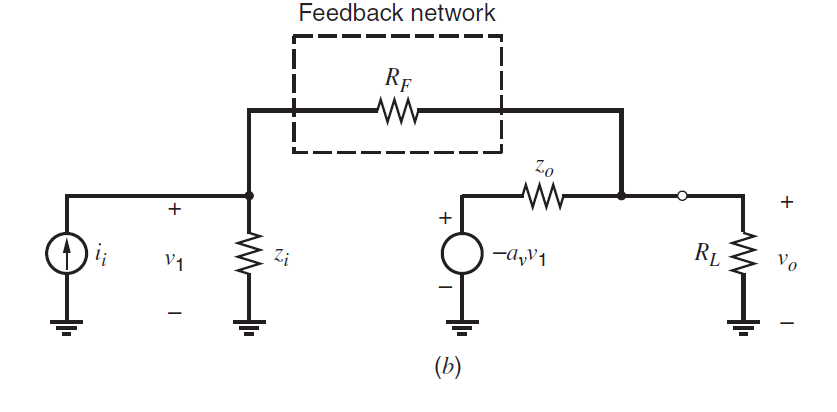
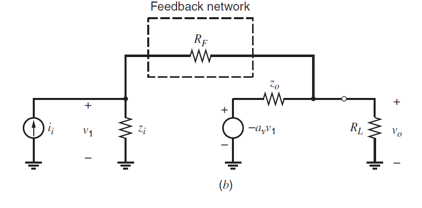
A signle-ended signal is measured against a fixed reference potential such as gnd while a differential signal is measured between two nodes where the signals variy equally and in opposite directions. The common potential around which the two signals at each node vary is know as the common-mode potential [12]. Note that any signal between two nodes can be decomposed into a common-mode component and a differential component as shown below.
\[ V_{in,1} - V_{in,2} = \frac {V_{in,1} + V_{in,2}}{2} + \frac {V_{in,1} - V_{in,2}}{2} = V_{in,CM} + V_{in,DM} \]
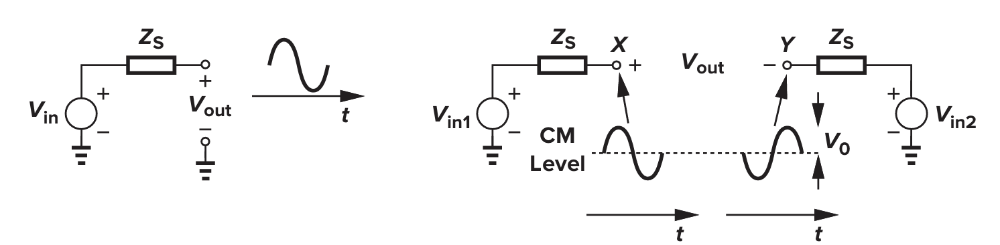 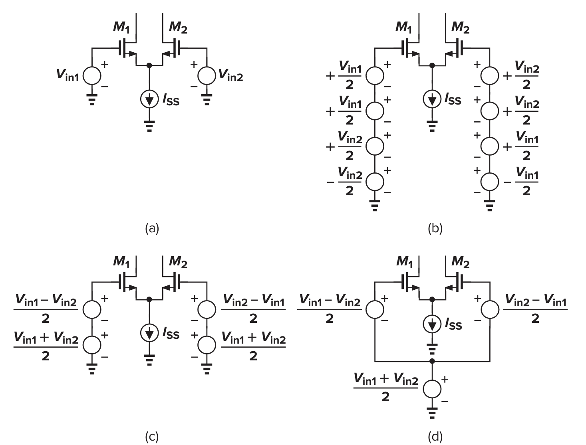
Basically, we can now bias a circuit at the common-mode input of \(V_{in,CM}\) and then apply \(\pm V_{in,DM}/2\) to the two nodes to achieve differential signaling.
From the above analysis, it is tempting to start off with two common source amplifiers whose inputs are \(\pm V_{in,DM}/2\) and the output is measured in between the two drain nodes. Figure 2 demonstrates the problem with this approach. As the common-mode changes, it can throw the transistors into cut-off with smaller differential swings. Note that when M1/M2 are off here - the outputs hit the rail (because there is no current in the branch).
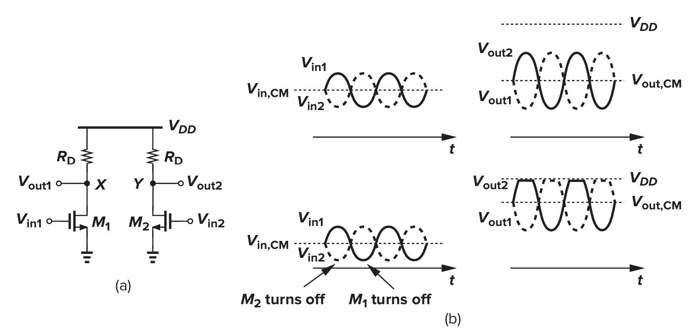
We basically would like to have an amplifier which is insensitive to common-mode swings. This means, we need another biasing element that can keep \(V_{GS}\) of the transistors at the same value irrespective of the input common-mode. One way to do this is to make the source floating and to make sure a fixed current flows through both devices - this way if \(V_{in,CM}\) goes up or down, the source node goes up or down too! The transistors won’t turn off since the bias current forces them to be on. This is exactly what we do in a 5T-OTA.
We use a biasing tail current to achieve the common-mode “rejection” - the ability to remain insensitive to common-mode swings. Let us study the 5T differential pair (from now on we’ll just call this the “diff-pair”) shown in figure 3. We follow analysis from [12].
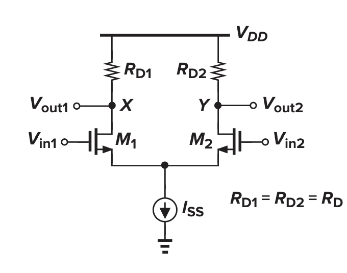
Tracking \(V_{in,1} - V_{in,2}\), we see that if \(V_{in,1}\) is much more negative than \(V_{in,2}\), M1 is turned off in figure 3 and the entire bias current flows through M2. The output \(V_{out,2}\) is simply \(V_{DD} -I_{SS}R_D\) and \(V_{out,1}\) is \(V_{DD}\). As \(V_{in,1}\) becomes more positive and gets closer to \(V_{in,2}\), M1 starts turning on and steering some current away from M2. \(V_{out,1}\) falls from \(V_{DD}\) and \(V_{out,2}\) increases. At \(V_{in,1} = V_{in,2}\), both the branches share the bias current equally and the output is at the common-mode \(V_{DD} -I_{SS}R_D/2\). AS \(V_{in,1}-V_{in,2}\) now becomes positive, due to symmetry M1 steals current from M2 til at certain point M2 is off. Figure 4 plots the differential output as a function of the differential input voltage.
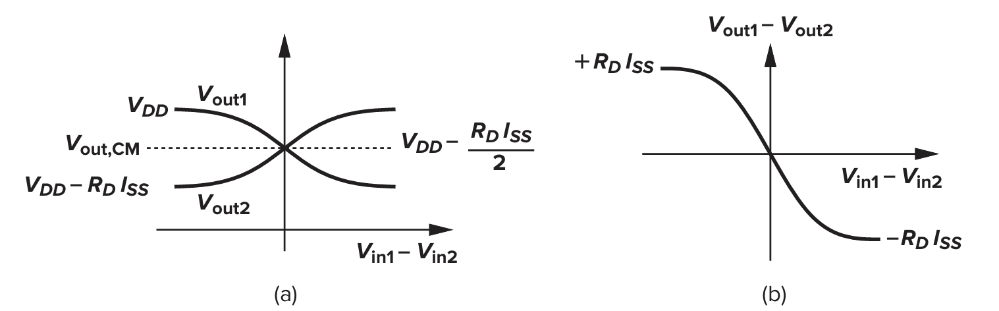
From figure 4, we see that the maximum slope, and thus, maximum small signal gain of this circuit is when \(V_{in,1} = V_{in,2}\). The circuit is also most linear in this case and becomes increasingly non-linear as the current is steered from the balanced condition into one of the two branches when larger differential swings are applied.
To study the common-mode behavior, we need to modify the tail current to add a realistic transistor. This ensure that when both devices are off (when \(V_{in,CM} =0\) for example), there is indeed no current flowing through either branch. As we increase \(V_{in,CM}\) beyond \(V_{th}\), the devices turn on but the tail transistors might still be in deep triode since the voltage at P is stil rising from close to zero. Increasing \(V_{in,CM}\) further gets the tail transistor into saturation and now equal currents flow through the two branches and the output settles at the output common-mode. This is illustrated in figure 5. Notice that in figure 4, the max and min values of the output voltages are independent of the input common-mode. This means that as the input common-mode is increasing, there can be a condition where the tail node (source of the input pair) is high enough to send the input transistors into triode. This sets the upper limit of \(V_{in,CM}\).
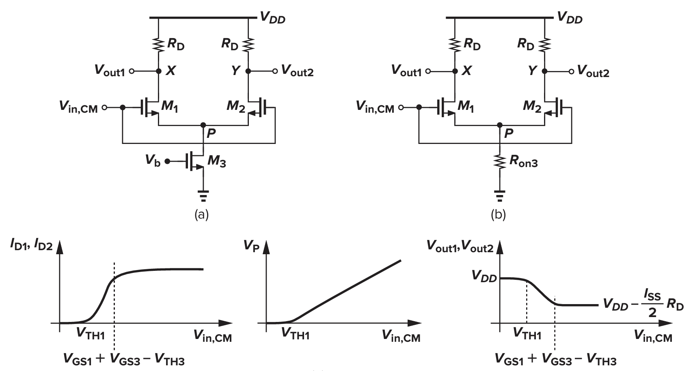
How does the small signal differential gain change with the input common-mode? Once the transistors M1 and M2 turn on but M3 is still in deep triode, the diff pair acts like a common source amplifier with a large degeneration resistor in the form of M3. Gain increases as the tail transistor comes out of triode and into saturation, where the gain is relatively constant till M1 and M2 enter triode when \(V_{in,CM}\) is very high. Increasing \(V_{in,CM}\) decreases the gain as the input pair is no longer in saturation. This is illustrated in figure 6
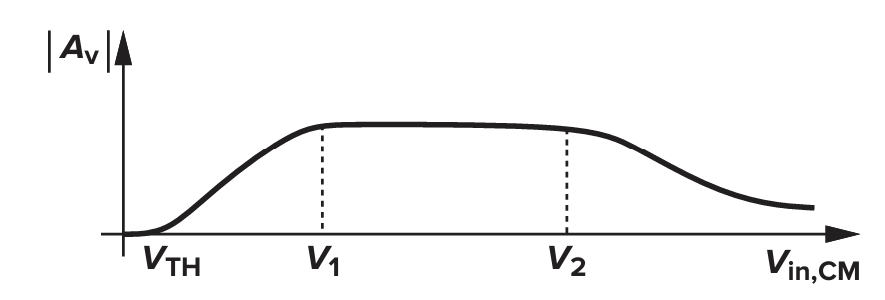
We can perform the above analysis quantitatively. This lets us also calculate the output characteristics in case the load on either side of the diff pair is not the same. For a symmetric diff pair, we can write the following equations assuming a square law device with no channel length modulation
\begin {equation} \label {eqn:diff_out} V_{out,1} - V_{out,2} = R_D(I_{D,1}-I_{D,2}) \end {equation}
\begin {equation} \label {eqn:diff_out2} I_{D,1}-I_{D,2} = \frac {1}{2} \mu _n C_{ox} \frac {W}{L} (V_{in,1}-V_{in,2})\sqrt {\frac {4I_{SS}}{\mu _n C_{ox}\frac {W}{L}} - (V_{in,1}-V_{in,1})^2} \end {equation}
Note that in deriving eqns 1 and 2, we assumed that the transistors are always in saturation. Therefore, despite having 2 possible \(\Delta V_{in}\) for which \(\Delta I_D\) is zero, the higher value of \(\Delta V_{in}\) condition leads to one of the devices being turned off and the tail current being completely steered into one branch.
Before we examine eqn 2 more closely, let us look at the differential transconductance (\(G_m\)).
\begin {equation} \label {eqn:gm_diff_pair} G_m = \frac {\partial \Delta I_D}{\partial \Delta V_{in}} = \frac {1}{2}\mu _n C_{ox} \frac {W}{L}\frac {\frac {4I_{SS}}{\mu _n C_{ox}W/L} - 2\Delta V_{in}^2}{\sqrt {\frac {4I_{SS}}{\mu _n C_{ox}W/L} - \Delta V_{in}^2}} \end {equation}
From eqn 3, we see that \(G_m\) is maximum for \(\Delta V_{in}=0\) - when the diff pair is balanced and the \(g_m\) of the individual transistors is equal. Another key point is that \(G_m\) falls to zero at \(\Delta V_{in1} = \sqrt {2I_{SS}/(\mu _n C_{ox}W/L)}\). This is because the current is completely steered away from one branch and other branch’s input device is turned off. At equilibrium (balanced diff pair), the current through each branch is \(I_{SS}/2\) and the gate overdrive is
\begin {equation} (V_{GS}-V_{TH})_{1,2} = V^*_{1,2} = \sqrt {\frac {I_{SS}}{\mu _n C_{ox}\frac {W}{L}}} = \frac {\Delta V_{in}}{\sqrt {2}} \label {eqn:max_del_vin} \end {equation}
Now, going back to eqn 2, we see that \(\Delta I_D\) is zero only for \(\Delta V_{in} = 0\) since at \(\Delta V_{in} = \Delta V_{in1}\), one of the transistors in the diff pair is not in saturation anymore. From eqn 4, we see that the diff pair can ”handle” a differential input of utmost \(\sqrt {2}V^*\) before the current is completely steered away into a single branch.
\(\Delta V_{in,max} = \sqrt {2}V^*\) - this is the range in which the diff pair maintains linearity
From a small signal perspective, due to equal and opposite swings at the input during differential operation, the tail node doesn’t experience any AC swing. This means, we can treat it to be at AC/virtual GND. Note that this doesn’t change even if the tail current source is non-ideal - the output resistance of the non-ideal tail current would source and sink the same (but opposite direction) small signal currents to either branches leaving the tail node at virtual GND. This now means we can essentially split the circuit right at the virtual GND node and analyse one half of it. This only works in case of symmetric differential pairs.
What about common-mode swings? In this case both M1 and M2 branches experience identical voltage/current swings. If we break them into two halves, no current should flow across the axis of symmetry since the voltages are same at corresponding points. This is demonstrated in figure 7. No current essentially means the two ckts are essentially open circuited in between. We can break them at the axis of symmetry and analyse one of them.
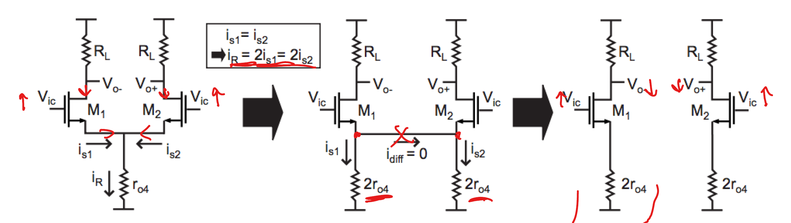
Another method of half ckt common-mode analysis invloves breaking the ckt in half and folding it over. This creates two parallel transistors (effective width is doubled and the load resistance is halved).
What happens in case M1 and M2 are asymmetric or the load resistances are asymmetric? We can begin with brute force analysis. By superposition, we set one of the \(V_{in,1/2}\) to zero and find out the transfer function to either outputs. Figure 8 shows the derivation using \(G_mR_{out}\) method.
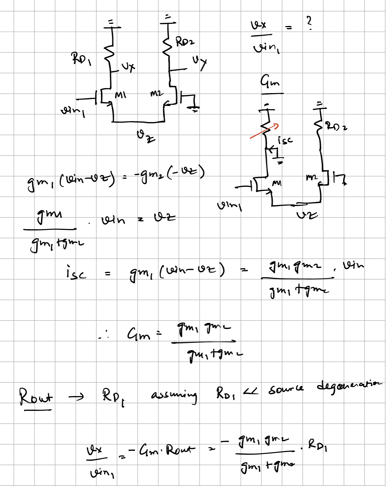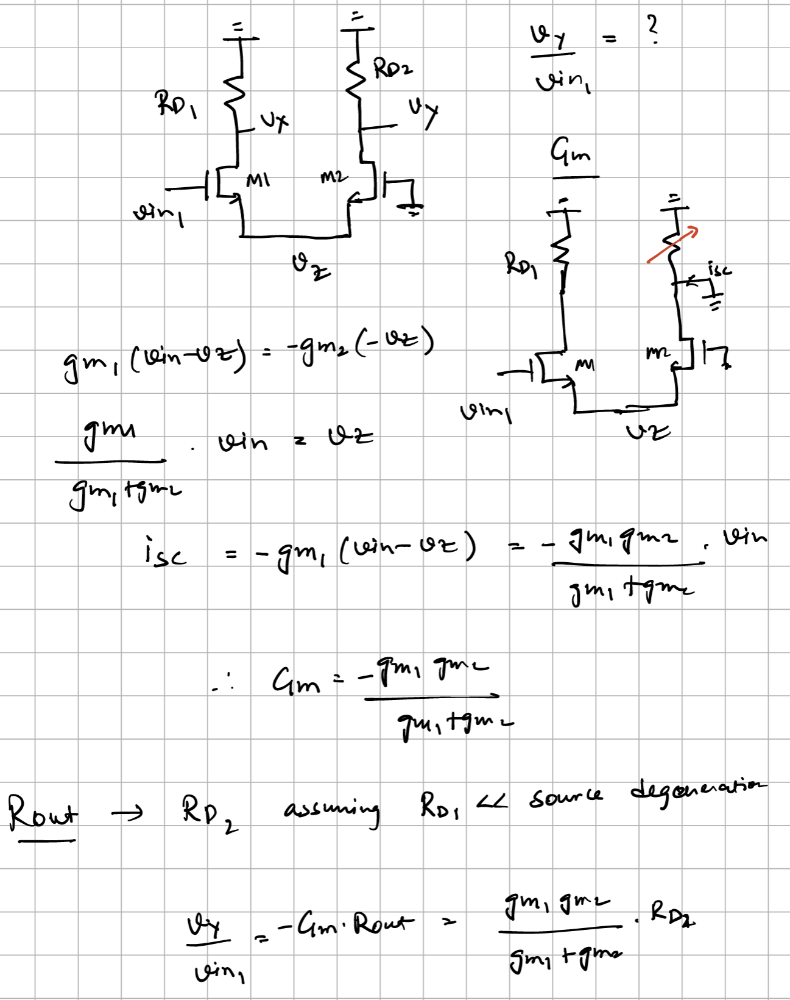
From figure 8, we get that the differential gain is given By
In [12], example problem 4.6 deals with an asymmetric diff pair where the widths of the input pair is in 1:2 ratio and the load resistances are equal. We can use the above analysis and set \(g_{m2} = 2g_{m1}\) and \(R_{D1} = R_{D2}=R_D\) to arrive at the same answer as in [12], \(A_v = 4/3 g_{m1} R_D\). Note that, for a given tail bias \(I_{SS}\), this value is lower than the symmetric case - only \(I_{SS}/3\) flows into M1, \(g_{m1}\) is \(\sqrt {3}\) lower than what it would’ve been in the symmetric case.
Example problem 4.8 in [12] deals with asymmetry in the input swings. Take a symmetric diff pair, similar to the one in figure 3. Now, if we apply inputs such that \(V_{in,1} \neq V_{in,2}\), how do we analyse the system? We can split the ckt into its differential and common mode half ckts and apply a differential voltage of \((V_{in,1}-V_{in,2})/2\) and a common mode voltage of \((V_{in,1}+V_{in,2})/2\) at each input (with the correct phase). The common mode ckt has infinite rejection ideally and rejects any common mode inputs. Therefore, the ckt simply takes the difference in the applied inputs \(V_{in,1}-V_{in,2}\) and amplifies it by \(g_mR_D\).
Within small signal regime, an ideal and symmetric differential pair rejects common mode swings fully and only amplifies the difference between the two inputs.
Finally, we end the discussion of asymmetric/mismatched diff pairs to see the impact of common-mode swings on differential outputs. If we do not have an ideal tail current source, we have some finite common-mode gain (note if the ckt is fully symmetric this doesn’t affect the differential gain). This can affect the biasing for subsequent changes since the output common mode is now not fixed and is swinging. [12] notes that in sub-nm nodes, this is an issue for cascaded stages as explained in figure 9. Note that as \(V_{in,CM}\) of first stage increases, the output common mode of the first stage decreases due to negative gain (more current is drawn by the input pair across the load resistance). The opposite happens in the second stage.
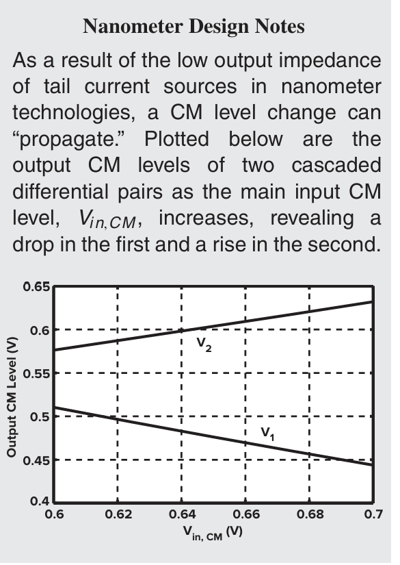
Common mode rejection can be increased in several ways at the cost output swing. Cascoded current sources, source-degeneration of input pairs, etc. are some common techniques.
But what happens to the differential output in case of a common mode swing? Ideally, nothing (when ckt is fully symmetric). But when there are some mismatches, there is an interesting phenomena that takes place.
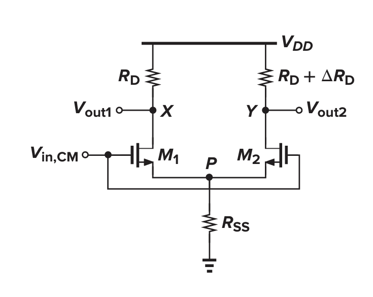
When \(V_{i,CM}\) goes up, the tail node \(V_P\) goes up by
\[\Delta V_P = \frac {R_{SS}}{R_{SS}+\frac {1}{2g_m}} \Delta V_{in,CM} \]
Note that in case of an ideal current source \(\Delta V_P\) is just \(\Delta V_{in,CM}\) and there is no change in current in either branches. In this case, however, there is an equal change in drain current and is equal to
\[\Delta I_{DS} = \frac {g_m}{1+2g_mR_{SS}}\Delta V_{in,CM}\]
The mismatch in load resistance causes different drops in \(V_X\) and \(V_Y\).
\[\Delta V_X = -\Delta V_{in,CM} \frac {g_m}{1+2g_m R_{SS}} R_D\] \[\Delta V_Y = \Delta V_{in,CM} \frac {g_m}{1+2g_m R_{SS}} (R_D+\Delta R_D)\]
We see a differential output for an input common mode swing of
\begin {equation} \label {eqn:cm_rd_mismatch_dm} \frac {\Delta V_{out}}{\Delta V_{in,CM}} = \Delta V_X + \Delta V_Y = \frac {g_m \Delta R_D}{1+2g_mR_{SS}} \end {equation}
Another interesting thing to observe is that, even if the output impedance of the tail current is high, the parasitic capacitance can act as a shunt - especially at high frequencies.
Similarly, if there is a \(g_m\) mismatch there is a common mode to differential conversion.
\begin {equation} \label {eqn:cm_gm_mismatch_dm} A_{CM-DM} = -\frac {\Delta g_m R_D}{(g_{m1}+g_{m2})R_{SS}+1} \end {equation}
Yet another mismatch could be body-effect mismatch. If the input pair shows a mismatch \(g_{mb1} \neq g_{mb2}\), the difference in small signal current on either side manifests as a change in differential output.
In summary, any mismatch in load resistance or the width, \(g_m\) or \(g_{mb}\), or change in input common mode on either branches can convert common mode swings into differential outputs.
Say we want to implement a variable gain fully differential amplifier that can span small signal gains from negative to positive values, i.e, \(V_{out} = A_1 V_{in} + A_2 V_{in}\), where \(A_1\) and \(A_2\) are controlled by the tail currents of the two amplifiers. Figures in figure 11 show the implementation of this idea.
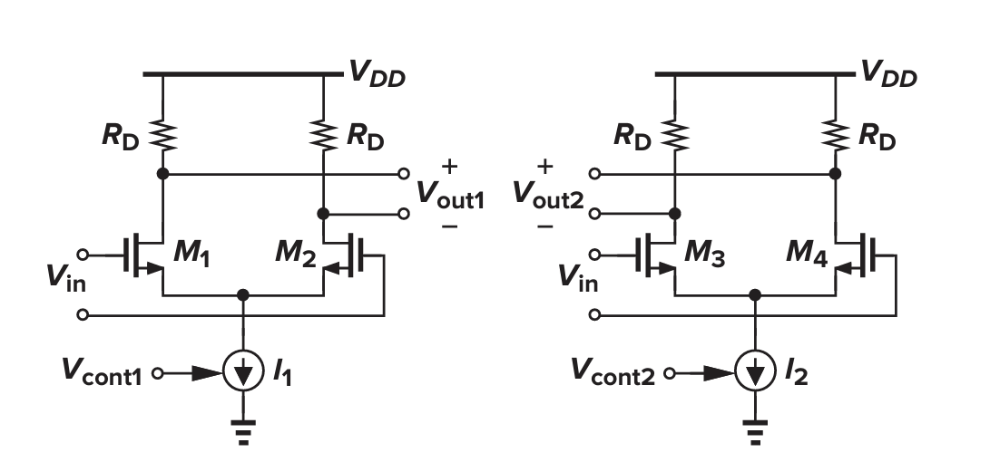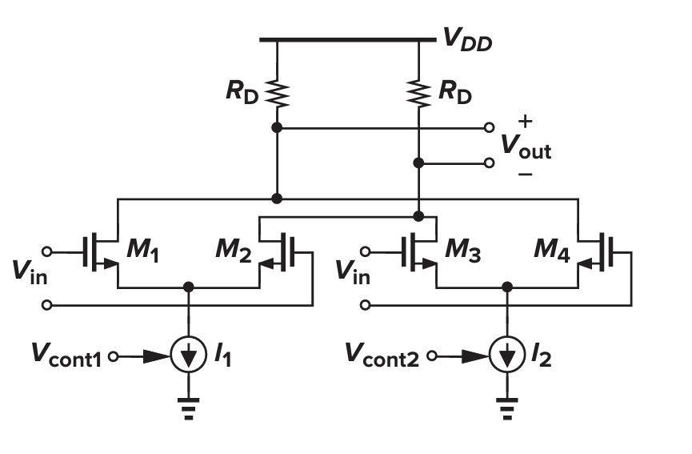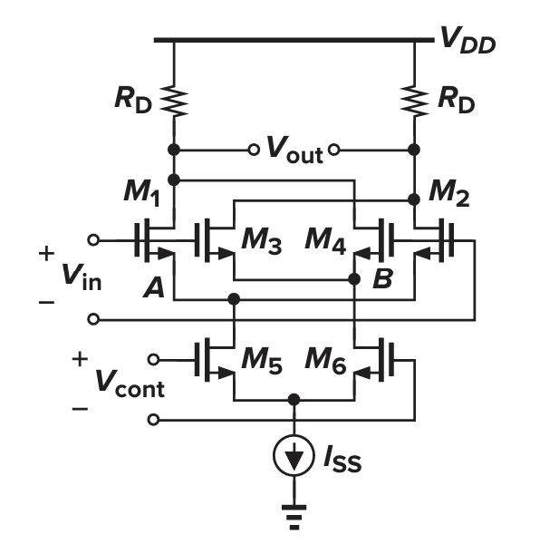
In figure 11, the differential input \(V_{cont}\) changes the current in the two diff pairs in opposite directions - which makes it possible to steer the current completely from one branch into another - thereby achieving gains from negative to positive values. Interestingly, exchanging the inputs to the control signal still gives us the same functionality. Another interesting fact about a Gilbert Cell is that it can be used an analog voltage multiplier. Since \(V_{out} = V_{in}f(V_{cont})\), we can use Taylor series and linearize the dependence of \(V_{out}\) on \(V_{cont}\) to write \(V_{out} \approx V_{in} . \alpha V_{cont}\). This property is true for any voltage-controlled VGA and is used in RF ckts as a multiplier/mixer.
We study negative feedback in this section. It can help control gain, input/output impedance to a reliably set value while increasing BW and improving linearity.
Figure 12 shows a system in ideal feedback - a forward path through amplifiers only, a feedback network (mostly passive), and a differencing node at the input. The differencing node takes the input and a fraction of the output fedback by the feedback network and gives the error signal (difference) as input to the amplifier. The signal here could be current or voltage.
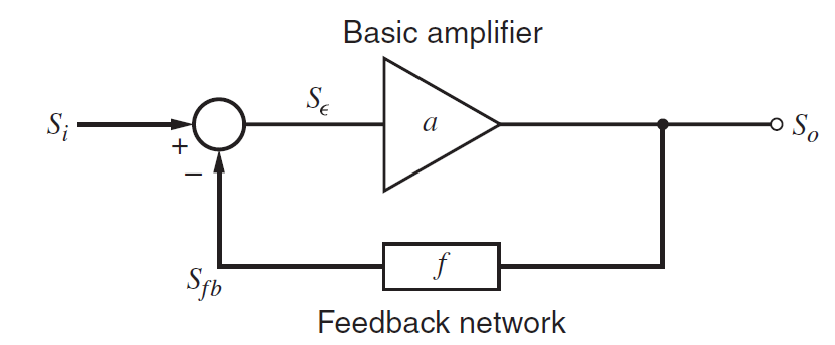
Say the amplifier has an open-loop gain of \(a\) and the transfer function of the feedback network is \(f\).Then, we have the following eqns
\begin {equation} \label {eqn:ideal_fb_eqns} \begin {split} S_e &= S_i - fS_o \\ S_0 &= aS_e = a (S_i - fS_0)\\ \frac {S_o}{S_i} &= A_{CL} = \frac {a}{1+af} \end {split} \end {equation}
From eqn 8, we see that the open-loop gain decreases by \(1+af\). We call \(T=af\) as the loop gain. Note that \(T\) is a dimension-less quantity (\(a\) and \(f\) can have dimensions but their product is dimension-less). In the same eqn, we make a few more observations. If \(T >> 1\), then \(A_{CL} \approx \frac {1}{f}\) - we have well controlled gain.
\begin {equation} \label {eqn:ideal_fb_eqns2} \begin {split} \frac {S_e}{S_i} &= \frac {1}{1+T} \\ \frac {S_{fb}}{S_e} &= T = af \end {split} \end {equation}
Eqn 9 shows that as the loop gain \(T \rightarrow \inf \), the error signal \(S_e \rightarrow 0\). The loop gain is simply the transfer function from the error signal to the differencing node via the amplifier and the feedback network.
Depending on what kind of signal we’re sensing at the output - current or voltage - and what we’re feeding back to the input, we have 4 combinations. Figure 13 shows the different basic amps we have - again depending on the input and output signals the amplifier handles.
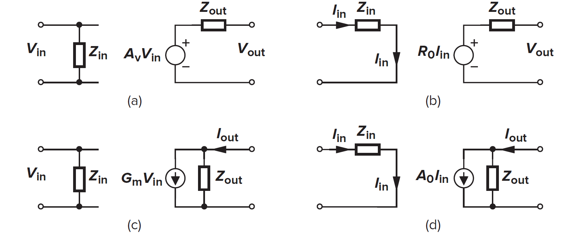
To sense a voltage, we usually place a voltmeter in parallel. In case of feeback, any element that is used to sense a voltage and is placed in parallel to the output makes a “shunt feedback” [12]. Similarly, a current is sensed with an ammeter in series. For a feedback system, any element that perform a similar function and is in series with the output makes a “series feedback”. Note that here we’re only talking about the sensing mechanism at the output - we are not talking about the quantity that is returned to the input.
Let us first consider the simplest case without loading the input or output. Figure 14 shows the topology of a series-shunt or a voltage-voltage feedback. The feedback network shunts the output voltage and feeds it in series to the input voltage.
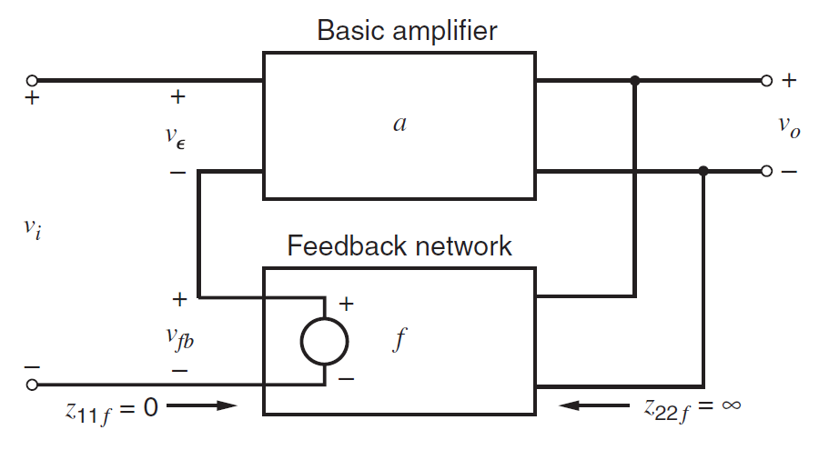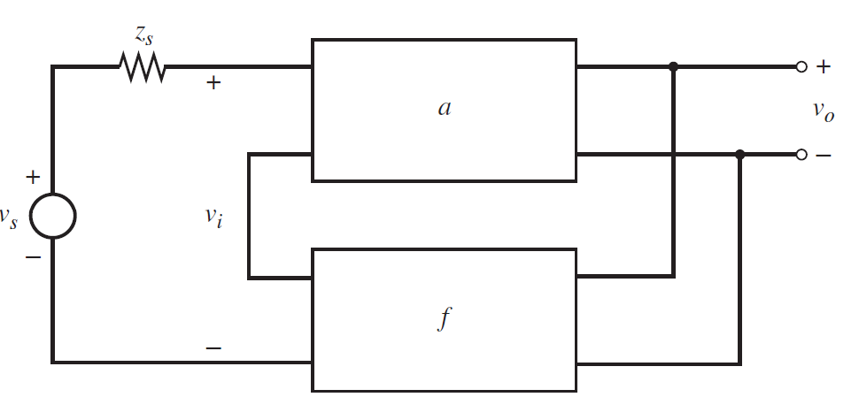
We can write the following equations
\begin {equation} \label {eqn:ideal_series-shunt_eqns} \begin {split} v_o &= av_e \\ v_{fb} &= fv_o \\ v_e &= v_i - v_{fb} \\ \implies \frac {v_o}{v_i} &= \frac {a}{1+af} \end {split} \end {equation}
Equation 10 show that we get the same voltage gain as in the ideal case. If there was a voltage source (\(v_s\)) with some finite impedance (\(z_s\)), and the amplifier has a finite impedance as well (\(z_{i}\)), then we get a voltage divider at the input
\[v_i = \frac {z_i}{z_i + z_s}v_s\]
This shows that an ideal input to this system is a voltage input (since it will ideally have zero source impedance) and the entire input voltage shows up at the input of the amplifier.
Let us now analyze how this kind of feeback affects the input and output impedance of the open-loop amplifier.
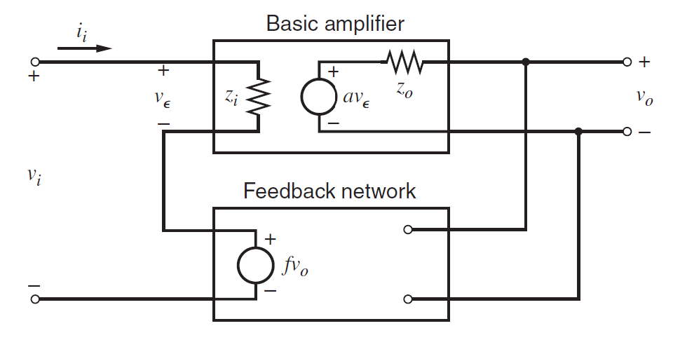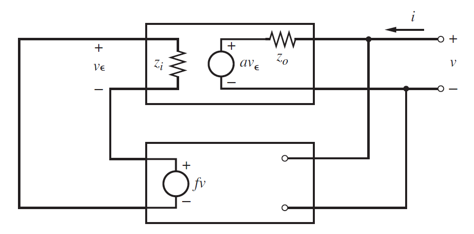
For input impedance, we see that \(z_i\) has a series element \(fv_0\) that causes a change from its open-loop value. Can we make a guess by looking at figure 15 if the input impedance will increase or decrease with feedback? We can intuit that in open-loop entire \(v_i\) was dropped across \(z_i\) leading to a higher current draw from the source. In case of feedback, we see that only the error voltage is dropped across \(z_i\) - therefore, drawing smaller current from the source. In case of feeback, it is always better to calculate and then sharpen your intuition. We get that \(z_{i,CL} = z_{i} (1+T)\) where \(T=af\).
Similarly, for output impedance, we can guess that a shunt connection will probably decrease the impedance as compared to its open-loop counterpart. This is indeed true and is verified by calculations. We get that \(z_{o,CL} = z_{o} /(1+T)\) where \(T=af\).
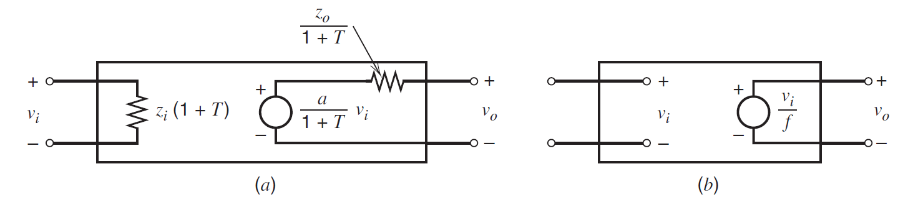
With the above results, a series-shunt or a voltage-voltage feedback can be summarized using the equivalent ckts in figure 16.
In shunt-shunt feedback, we sense the output voltage in a shunt configuration similar to the previous case, but now, we feeback current to the input in a shunt configuration as well. Hence, this topology is also called as voltage-current feedback.
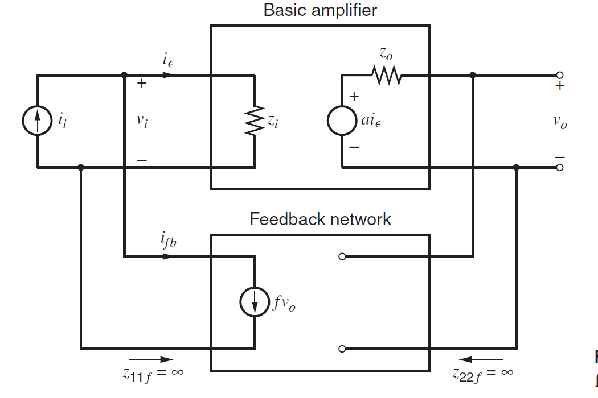
From figure 17, we see that any source resistance shunts the input small signal current away from the input impedance \(z_i\) of the open-loop amplifier, thus, killing any transimpedance gain. Therefore, we want the source to have an infinite input impedance, i.e., we want a current source.
For this configuration, we can derive the following results
\begin {equation} \label {eqn:shunt-shunt_eqns} \begin {split} \frac {v_o}{i_i} &= \frac {a}{1+af} \\ z_{i,CL} &= \frac {z_i}{1+T} \\ z_{0,CL} &= \frac {z_o}{1+T} \end {split} \end {equation}
From eqns 11, we note thatm the transimpedance follows the ideal feedback eqn, and that both the input and output impedances are reduced by \(1+T\) where \(T=af\). Figure 18 shows the equivalent ckt with the results derived above.
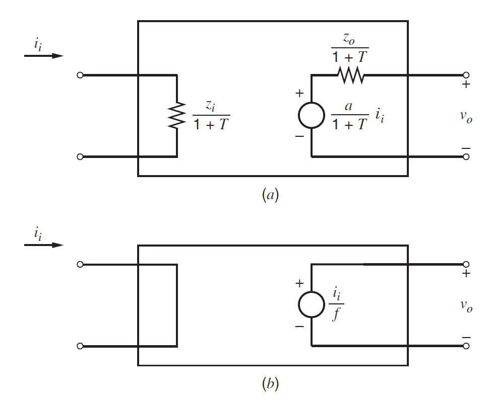
This configuration makes a good transimpedance amplifier where there is a current input and a voltage output.
From the above two sections, we’ve seen that a shunt feedback (whether at input or output) decreases that particular impedance by \(1+T\) and a series feedback increases it by \(1+T\). We can, therefore, summarize the remaining two kinds of feedback using these results.
| Configuration | Output sensed | Input fedback | Ideal input source | Input impedance | Output impedance |
| Series-shunt | Voltage (shunt) | Voltage (series) | Ideal voltage source | \(z_i(1+T)\) | \(\frac {z_o}{1+T}\) |
| Shunt-shunt | Voltage (shunt) | Current (shunt) | Ideal current source | \(\frac {z_i}{1+T}\) | \(\frac {z_o}{1+T}\) |
| Shunt-series | Current (series) | Current (shunt) | Ideal current source | \(\frac {z_i}{1+T}\) | \(z_o(1+T)\) |
| Series-series | Current (series) | Voltage (series) | Ideal voltage source | \(z_i(1+T)\) | \(z_o(1+T)\) |
From table 1, we see that the configurations are usually named Input connection type - Output connection type (like say series-shunt) or Input fedback - Output sensed (voltage-voltage correspondingly). Current at the output is always sensed in series while voltage at output is sensed in parallel. This makes sense - a voltmeter is connected in parallel across a single port, and an ammeter is connected in series across. On the other hand, a voltage input is fedback in series at the summing node - voltages in series can add up, while current is fedback in parallel - since current summation takes place in parallel ckts.
Let’s take a detour to explore two-port analysis. A generic three-terminal, two-port network is shown in figure 19.
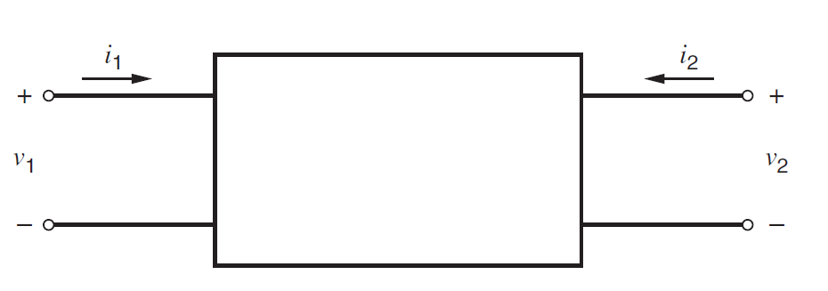
Depending on what are the inputs and outputs of the network we can wirte a generic transfer function from input to output
\begin {equation} \label {eqn:generic_two_port} \begin {bmatrix} S_{in,1} \\ S_{in,2} \end {bmatrix} = \begin {bmatrix} TF_{11} & TF_{12} \\ TF_{21} & TF_{22} \end {bmatrix} \begin {bmatrix} S_{out,1} \\ S_{out,2} \end {bmatrix} \end {equation}
In eqn 12, \(S_{in}\) and \(S_{out}\) can be currents or voltages and the transfer function can accordingly have unit-less, or resistance, or conductance as units.
If in a two-port network, we wish to write the input and output voltages as a function of the currents in and out of the network, we use Z-paramters of the two-port. Each element in the Z-matrix has the units of resistance.
\begin {equation} \label {eqn:z-parameter} \begin {bmatrix} V_1 \\ V_2 \end {bmatrix} = \begin {bmatrix} Z_{11} & Z_{12} \\ Z_{21} & Z_{22} \end {bmatrix} \begin {bmatrix} I_1 \\ I_2 \end {bmatrix} \end {equation}
To calculate each element of the Z-matrix, we set the complementary signal to 0.
\begin {equation} \label {eqn:z-matrix-elements} \begin {split} Z_{11} &= \frac {V_1}{I_1} \hspace {1 mm}\vline _{I_2=0} \\ Z_{22} &= \frac {V_2}{I_2} \hspace {1 mm}\vline _{I_1=0} \\ Z_{12} &= \frac {V_1}{I_2} \hspace {1 mm}\vline _{I_2=0} \\ Z_{21} &= \frac {V_2}{I_1} \hspace {1 mm}\vline _{I_1=0} \\ \end {split} \end {equation}
In eqn 14, whenever we need to set a current to zero, we basically leave that corresponding port open. In the list of feedback configurations listed in table 1, to which one should we apply the Z-matrix for analysis? One test is to see what is common to each port of the amplifier and the feedback network. For example, in a series-series feedback, current is sampled at the output and a proportional voltage is added in series at the input. Since both the connections are in series, the amplifier and the feedback network have the same current flowing through them at both the ports. This makes it easy for us to use the Z-matrix.
If in a two-port network, we wish to write the input and output currents as a function of the voltages at the input and output of the network, we use Y-paramters of the two-port. Each element in the Y-matrix has the units of conductance.
\begin {equation} \label {eqn:y-parameter} \begin {bmatrix} I_1 \\ I_2 \end {bmatrix} = \begin {bmatrix} Y_{11} & Y_{12} \\ Y_{21} & Y_{22} \end {bmatrix} \begin {bmatrix} V_1 \\ V_2 \end {bmatrix} \end {equation}
To calculate each element of the Y-matrix, we set the complementary signal to 0.
\begin {equation} \label {eqn:y-matrix-elements} \begin {split} Y_{11} &= \frac {I_1}{V_1} \hspace {1 mm}\vline _{V_2=0} \\ Y_{22} &= \frac {I_2}{V_2} \hspace {1 mm}\vline _{V_1=0} \\ Y_{12} &= \frac {I_1}{V_2} \hspace {1 mm}\vline _{V_2=0} \\ Y_{21} &= \frac {I_2}{V_1} \hspace {1 mm}\vline _{V_1=0} \\ \end {split} \end {equation}
In eqn 16, whenever we need to set a voltage difference to zero, we basically short circuit that corresponding port. From table 1, a shunt-shunt feedback can be analyzed using the Y-matrix since both the amplifier and the feedback network share the same voltage across their ports.
If in a two-port network, we wish to write the input voltage and output current as a function of the input current and output voltage of the network, we use H-paramters of the two-port. Diagonal elements in the H-matrix have the units of resistance/conductance while off-diagonal elements are unitless.
\begin {equation} \label {eqn:h-parameter} \begin {bmatrix} V_1 \\ I_2 \end {bmatrix} = \begin {bmatrix} H_{11} & H_{12} \\ H_{21} & H_{22} \end {bmatrix} \begin {bmatrix} I_1 \\ V_2 \end {bmatrix} \end {equation}
To calculate each element of the H-matrix, we set the corresponding signal to 0.
\begin {equation} \label {eqn:h-matrix-elements} \begin {split} H_{11} &= \frac {V_1}{I_1} \hspace {1 mm}\vline _{V_2=0} \\ H_{22} &= \frac {I_2}{V_2} \hspace {1 mm}\vline _{I_1=0} \\ H_{12} &= \frac {V_1}{V_2} \hspace {1 mm}\vline _{I_1=0} \\ H_{21} &= \frac {I_2}{I_1} \hspace {1 mm}\vline _{V_2=0} \\ \end {split} \end {equation}
In eqn 18, whenever we need to set a voltage difference to zero (or a current to zero), we basically short circuit that corresponding port (or open it). From table 1, a series-shunt feedback can be analyzed using the H-matrix since both the amplifier and the feedback network share the same current across their input ports and the same voltage across their output ports.
If in a two-port network, we wish to write the input current and output voltage as a function of the input voltage and output current of the network, we use G-paramters of the two-port. Diagonal elements in the G-matrix have the units of conductance/resistance while off-diagonal elements are unitless.
\begin {equation} \label {eqn:g-parameter} \begin {bmatrix} I_1 \\ V_2 \end {bmatrix} = \begin {bmatrix} G_{11} & G_{12} \\ G_{21} & G_{22} \end {bmatrix} \begin {bmatrix} V_1 \\ I_2 \end {bmatrix} \end {equation}
To calculate each element of the G-matrix, we set the corresponding signal to 0.
\begin {equation} \label {eqn:g-matrix-elements} \begin {split} G_{11} &= \frac {I_1}{V_1} \hspace {1 mm}\vline _{I_2=0} \\ G_{22} &= \frac {V_2}{I_2} \hspace {1 mm}\vline _{V_1=0} \\ G_{12} &= \frac {I_1}{I_2} \hspace {1 mm}\vline _{V_1=0} \\ G_{21} &= \frac {V_2}{V_1} \hspace {1 mm}\vline _{I_2=0} \\ \end {split} \end {equation}
In eqn 20, whenever we need to set a voltage difference to zero (or a current to zero), we basically short circuit that corresponding port (or open it). From table 1, a shunt-series feedback can be analyzed using the G-matrix since both the amplifier and the feedback network share the same voltage across their input ports and the same current across their output ports.
Here is the summary of which parameters to use for feedback analysis.
| Two-port parameter | Feedback configuration | Input vector | Output vector | Amplifier example |
| Z-matrix | Series-series | Input/Output currents | Input/Output voltages | Transconductance amplifier |
| Y-matrix | Shunt-shunt | Input/Output voltages | Input/Output currents | Transimpedance amplifier |
| H-matrix | Series-shunt | Input current/Output voltage | Input voltage/Output current | Voltage amplifier |
| G-matrix | Shunt-series | Input voltage/Output current | Input current/Output voltage | Current amplifier |
One trick is to see what are the input/output parameters we’re interested in. For example, in figure 20, we see a voltage being sensed by the feedback network - it definitely has to shunt it. The capacitor divider, which forms the feedback network, is providing a voltage input to the gate of M1 - but it is providing a small signal current through M1 in feedback to \(I_{in}\). Therefore, it is a shunt-shunt network (althoug it might look series-shunt due to the voltage fedback by the capacitor divider).
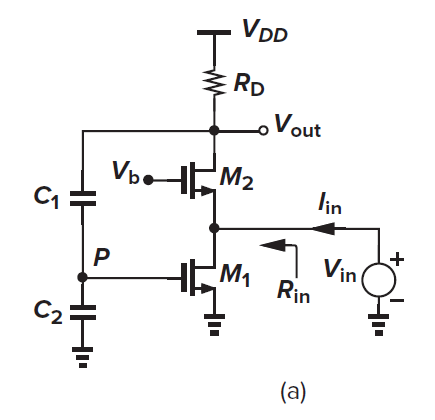
Let us take a few more examples. In figure 21, we’re shunting the voltage from the output but what is happening with the input? At the input, we have a voltage input that is being converted into a current input by the resistor R2. Therefore, at the negative input of the op-amp there is a summation of currents - meaning a shunt feedback.
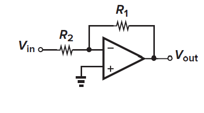
In figure 22, the output is clearly shunted and feedback is applied to the gate of M2. Now, how do we identify the summing node and the kind of feedback at the input? It seems like the case in figure 20, where the gate voltage applied to the feedback transistor is summed with the input current. However, in figure 22, there is no current input and the summing node is the difference between votlages applied at M1 and M2 (since this is a differential amplifier). Therefore, the voltages are added in series and this is a series-shunt feedback as well.
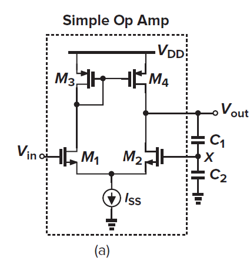
Finally, let us look at the example in figure 23. Here, the output current is sensed in series using \(R_s\). If we did not have \(R_s\), we wouldn’t have the series element which causes voltage drop due to the output current. Then, are we feeding back a voltage through \(R_F\) or a current? It seems like the voltage at node Y responds to changes in \(i_{out}\) and this is fedback to the gate of M1. While this might seem to be the case, note that the input is a current source and the summing node is actually Y and not the gate of M1. The input current is shunted and sent to the summing node at Y. Hence, this is an example of a shunt-series feedback.
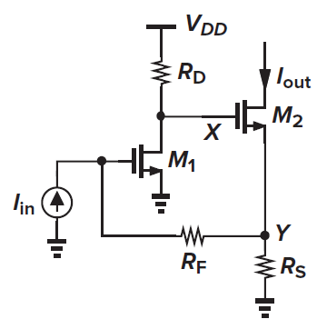
When discussing different feedback configurations, we assumed that the feedback network doesn’t load the input or output. While this can be true in some cases, it is not universally true and mostly not the case in practice. We need to study how the feedback network loads the input and output of the amplifier. We will study an example with shunt-shunt feedback. Luckily, all the results from this study are readily extended to other feedback configurations.
From table 2, we know that for a shunt-shunt feedback, we use Y-parameters (since both the feedback network and the amplifier share the same voltage at input and output). We define Y-parameters for both the amplifier and the feedback network. Figure 24 on the left shows a complete picture using the two-port model.
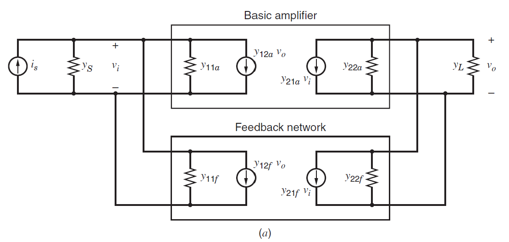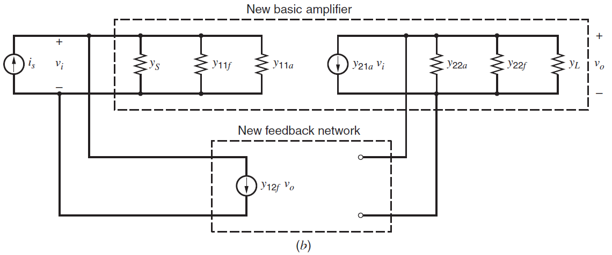
If we first make no assumptions, and let \(y_i = y_s + y_{11a} + y_{11f}\) and \(y_o = y_L + y_{22a} + y_{22f}\), we get the following results
\begin {equation} \label {eqn:shunt-shunt-loading-eqns} \begin {split} a &= -\frac {y_{21a}+y_{21f}}{y_iy_o} \\ f &= y_{12a} + y_{12f} \\ \frac {v_o}{i_s} &= \frac {a}{1+af} \end {split} \end {equation}
Let us understand the expressions in eqn 21. The amplifier forward gain (which is obtained by essentially removing the feeding back parts of the feedback network) is the sum of the transconductance from \(v_i\) to \(v_o\) through the amplifier and the feedback network, whole divided by the product of total loading seen at the input and output (when I say loading, I mean cis-parameters not trans ones). Why does product come here in the denominator? - I have no intuitive explanation for this. The feedback factor (\(f\)) is essentially the feedback from \(v_o\) back to \(v_i\) through the amplifier and the feedback network.
We can make two reasonable approximations here. We assume that the feedforward path is much greater through the amplifier than it is through the feedback - \(y_{21a} >> y_{21f}\). Second, we also assume that the feedback from the feedback network is much larger than the feedback of the amplifier - \(y_{12a} << y_{12f}\). This reduces the expressions in eqn 21 to
\begin {equation} \label {eqn:shunt-shunt-loading-eqns2} \begin {split} a &= -\frac {y_{21a}}{y_iy_o} \\ f &= y_{12f} \\ \end {split} \end {equation}
We use eqns 22 for further analysis. Since we know the transmission gain, \(T=af\), and we also know the kind of feedback configuration, we can use table 1 to calculate the closed-loop input and output impedances of this system. Note that since transmission gain is a function of both the forward gain from the amplifier and the feedback network, we can change the closed-loop impedances by turning either knobs.
While we used the shunt-shunt configuration to study impact of loading, [5] proves that the same analysis holds for every other feedback configuration - we only need to substitute the correct two-port metrics in eqn 22.
| Feedback configuration | Open-loop gain (\(a\)) | Feedback factor (\(f\)) |
| Series-series | \(-\frac {z_{21a}}{z_iz_o}\) | \(z_{12f}\) |
| Shunt-shunt | \(-\frac {y_{21a}}{y_iy_o}\) | \(y_{12f}\) |
| Series-shunt | \(-\frac {h_{21a}}{h_ih_o}\) | \(h_{12f}\) |
| Shunt-series | \(-\frac {g_{21a}}{g_ig_o}\) | \(g_{12f}\) |
One advantage of this analysis is that it can be easily extended to multi-feedback systems and does not involve any breaking of the loop. This is all good, but given a ckt, how do we calculate these individual two-port parameters for both the amplifier and the feedback network? Let us start with some simple examples. Figure 25 shows a TIA which employs a shunt-shunt feedback.
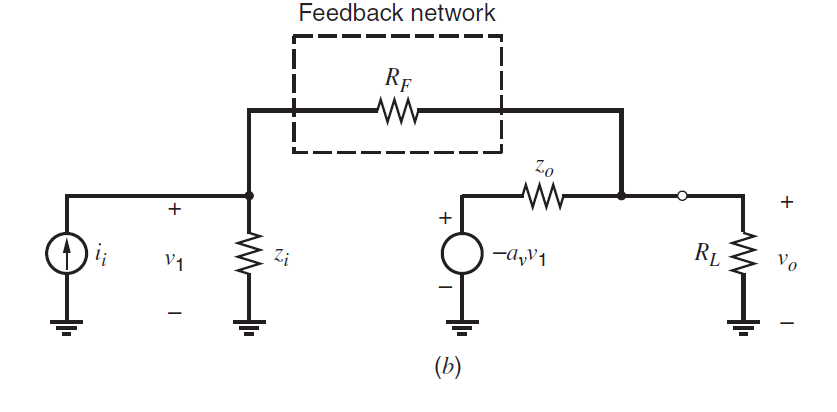
Without \(R_F\), it is straightforward to analyse the open-loop gain (\(a\)) of the TIA. How do we view \(R_F\) as a two port network that is in shunt-shunt with the amplifier’s input and output?
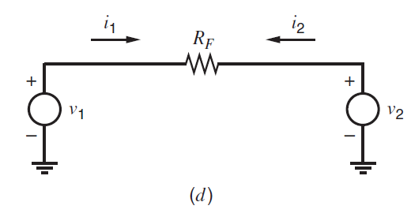
Since we can isolate the feedback network, we now do a two-port analysis on that part alone using the ckt shown in figure 26. For the feedback network,
\[y_{11f} = \frac {i_1}{v_1} \hspace {1mm} \vline _{v_2 = 0} = \frac {1}{R_F}\] \[y_{22f} = \frac {i_2}{v_2} \hspace {1mm} \vline _{v_1 = 0} = \frac {1}{R_F}\] \[f = y_{12f} = \frac {i_1}{v_2} \hspace {1mm} \vline _{v_1 = 0} = -\frac {1}{R_F}\]
We now have the effect of the loading from the feedback network. We can redraw the small-signal model in figure 25 by lumping the \(y_{11/22f}\) parts with the amplifier’s corresponding parameters.
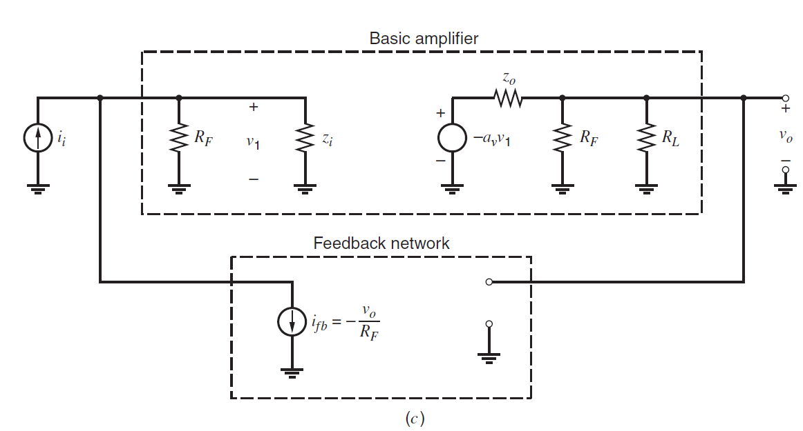
With figure 27, we can calculate \(a\) knowing that \(y_{21a} = -a_v/z_0\), and \(y_i = (1/R_F + 1/z_i)\) and \(y_o = (1/z_o + 1/R_F + 1/R_L)\). Note that I converted the Thevenin model of the op-amp to a Norton equivalent and that admittances are added up - not resistances.
\[a = \frac {y_{21a}}{y_iy_o} = -\frac {a_v(R_FR_L)(R_Fz_i)}{(R_F+z_i)(R_F+R_L+z_o)}\]
We now know \(T=af\) and can calculate closed loop impedances at the input and output. For the open-loop impedance, remove \(i_{fb}\) and we get
\[z_{i,OL} = R_F || z_i\] \[z_{o,OL} = R_F || z_o || R_L\]
Since the feedback is shunt at the input and output, the open-loop impedances are divided by \(1+T\) at both places.
Let’s do another example. Figure 28 shows an inverting op-amp as a series-shunt feedback ckt. We can easily identify the feedback network in this case. From table 2, we know that H-parameters are appropriate for analysis.
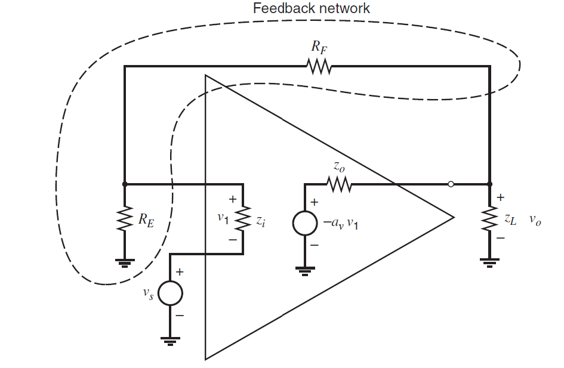
Similar to figure 26, what should be the ckt to evaluate the H-parameters of the feedback network here? Remember that we are trying to express \(V_1\) and \(I_2\) as a function of \(I_1\) and \(V_2\) when using H-matrix. Therefore, figure 29 needs to be used to extract the H-parameters for the feedback network.
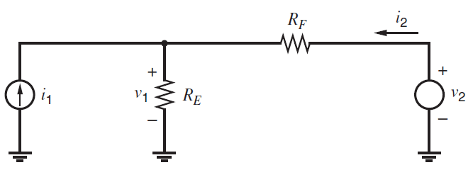
\[h_{11f} = \frac {v_1}{i_1} \hspace {1mm} \vline _{v_2 = 0} = R_E || R_F\] \[h_{22f} = \frac {i_2}{v_2} \hspace {1mm} \vline _{i_1 = 0} = \frac {1}{R_F+R_E}\] \[f = h_{12f} = \frac {v_1}{v_2} \hspace {1mm} \vline _{i_1 = 0} = \frac {R_E}{R_F+R_E}\]
What about the H-parameters of the basic amplifier? This is a bit involved but makes our life easier when calculating open-loop gain \(a\). Figure 30 goes through converting the ckt into the required form.
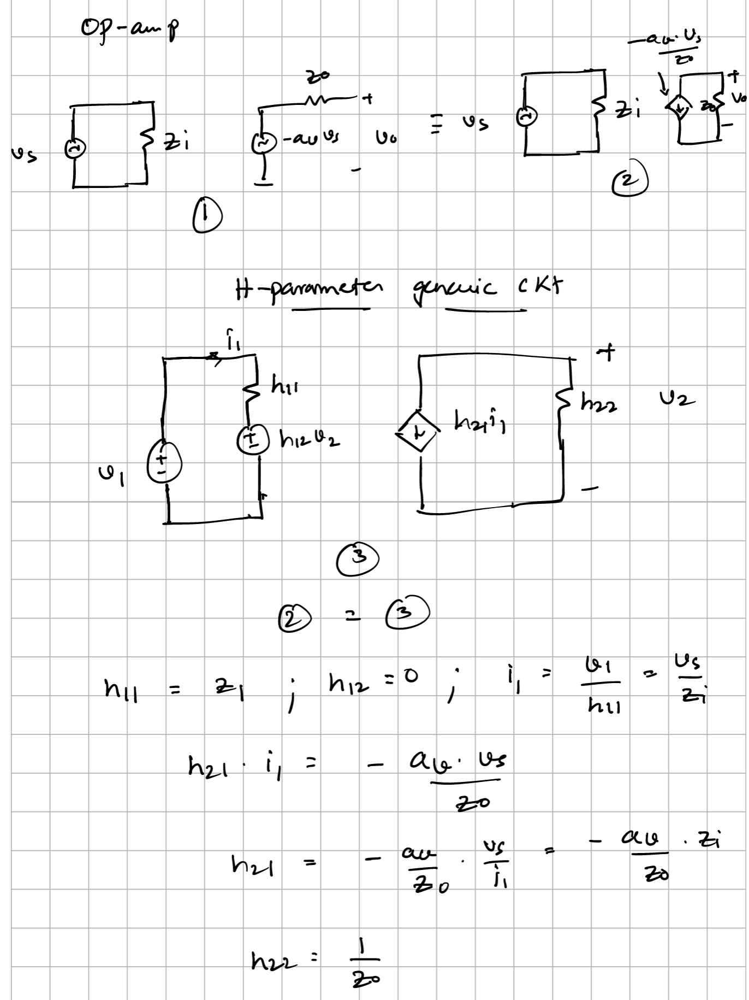
\[h_{11a} = z_i\] \[h_{22a} = \frac {1}{z_o} \] \[h_{21a} = -\frac {a_v z_i}{z_o} \]
We now calculate \(h_i = h_{11a} + h_{11f}\), \(h_o = h_{22a} + h_{22f} + 1/R_L\), and \(a = -\frac {h_{21a}}{h_ih_o}\).
\[h_i = z_i + \frac {R_ER_F}{R_E+R_F}\] \[h_o = \frac {1}{z_o} + \frac {1}{R_E + R_F} + \frac {1}{R_L}\] \[a = \frac {a_v z_i (R_E+R_F)R_L}{(R_E+R_F)R_L+z_o(R_E+R_F+R_L)}\]
We can now calculate \(T=af\) and use it calculate the closed-loop impedances given the open-loop inmpedances
\[z_{i,OL} = h_{11f} + h_{11a} = z_i + R_E || R_F\] \[\frac {1}{z_{o,OL}} = h_{22f} + h_{22a} + \frac {1}{R_L} = \frac {1}{R_F+R_E} + \frac {1}{z_o} + \frac {1}{R_L}\]
I believe that 2-port analysis is most helpful in series-series or shunt-sunt feedback configurations when Z- and Y-matrices can be used and are straightforward to calculate for both the feedback network and the amplifier. In other cases, H- and G-matrices are invloved which needs an additional transformation on the amplifier itself and the units of different elements in the matrix need to be taken care of.
So far, most of the examples of feedback only included passive components such as resistors (or capacitors). What if there is a transistor as a part of the feedback network? Let us consider the ckt in figure 20 where we have a shunt-shunt feedback - let’s replace the capacitive feedback with a resistive feedback network. Figure 31 works through an example. Interestingly, the open-loop gain does not depend on \(g_{m2}\) - could this be due to the loading of the feedback resistors?
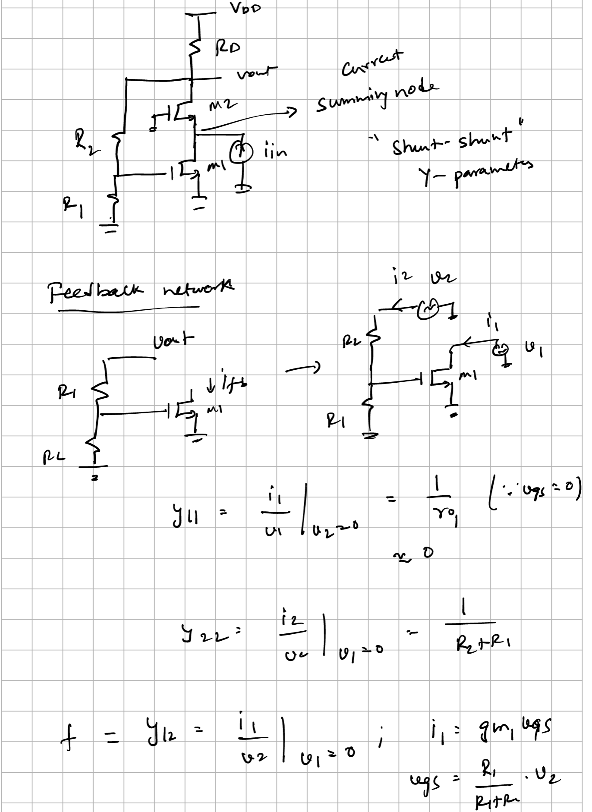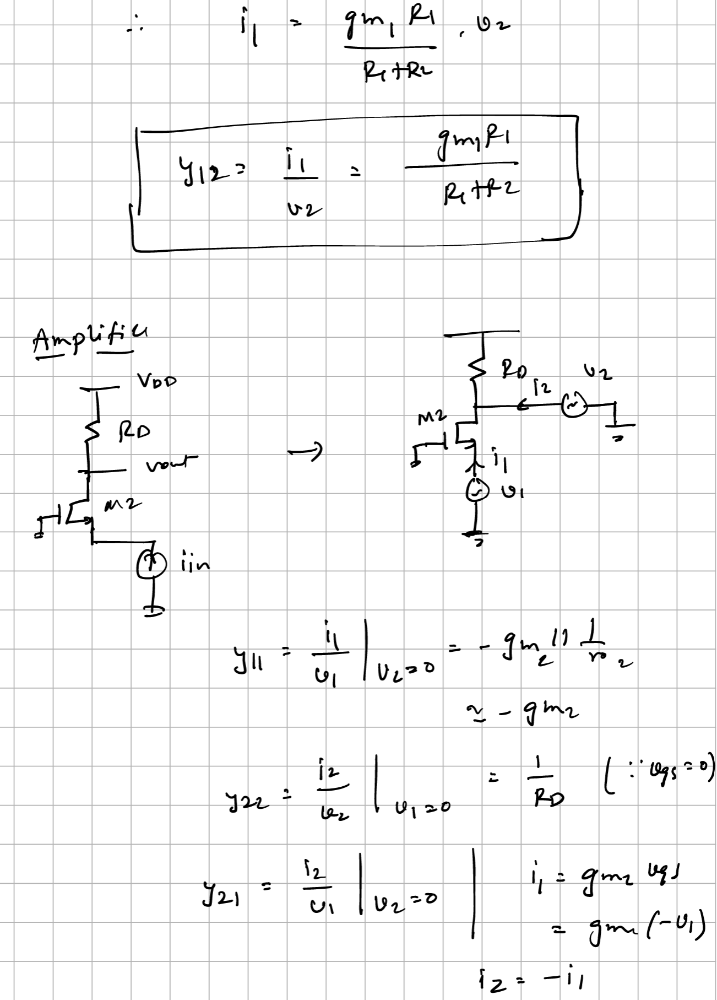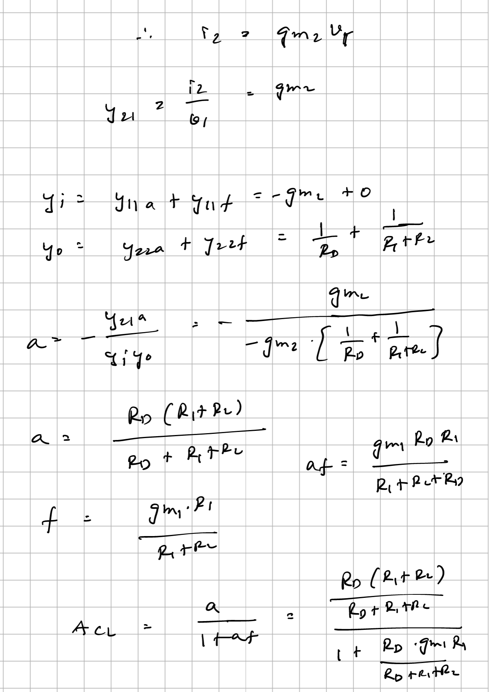
Note that since the summing node is the source of M2, M1 is a part of the feedback network and not the core amplifier.
Feedback does not improve input-reffered noise [12]. From figure 32, we see that when the input-reffered noise of an open-loop amplifier \(V_n\) is applied at the input, \((V_{in}-\beta V_{out}+ V_n)A_1 = V_{out}\).
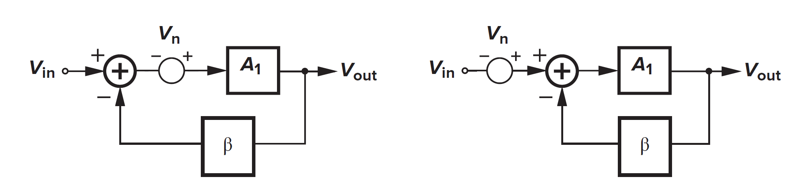
\[V_{out} = (V_{in}+V_n)\frac {A_1}{1+\beta A_1}\]
It is as though both \(V_{in}\) and \(V_n\) are applied at the input individually. \(V_n\) is still the input reffered noise of the closed-loop system (and has not changed its value from the open-loop system). In the above analysis, we ignored the noise from the feedback network itself. Let’s go through an example where we model the input-reffered noise with uncorrelated input current and noise sources, and consider the noise from the feedback resistors.
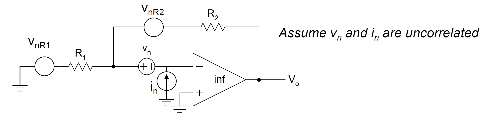
In figure 33, we can calculate the output noise contribution from each of the uncorrelated source.
From the op-amp’s voltage noise and current sources we have,
\[\overline {v^2_{on}} = \overline {v^2_{n}}(1+|A_v|)^2\] \[\overline {v^2_{on}} = \overline {i^2_{n}}R_2^2\]
For the noisy resistor \(R_2\), we remove all other noise sources - we see that \(\overline {v^2_{nR_2}}\) shows up completely at the output. \[\overline {v^2_{on}} = \overline {v^2_{nR_2}} = 4kTR_2\]
For \(R_1\), the noise is divided by the resistors \(R_1\) and \(R_2\) before reaching the output.
\[\overline {v^2_{on}} = \overline {v^2_{nR_1}}\bigg ( \frac {R_2}{R_1} \bigg )^2 = 4kTR_1 \bigg ( \frac {R_2}{R_1} \bigg )^2\]
Total noise at the output is the sum of all the above noise sources. To refer it to the input, we divide this total by the square of the closed-loop gain \(A_v = -R_2/R_1\).
\begin {equation} \label {eqn:total_noise_fb} \overline {v^2_{in}} = \frac {\overline {v^2_{in}}}{|A_v|^2} + \overline {v^2_{n}}\bigg (1+\frac {1}{|A_v|}\bigg )^2 + \overline {i^2_{n}}R_1^2 + \overline {v^2_{nR_1}} \bigg ( 1+ \frac {1}{A_v}\bigg ) \end {equation}
Note that from eqn 23, it is wrong to assume \(R_2\) doesn’t impact the total IRN. For a fixed \(R_1\), increasing \(R_2\) increases the closed-loop gain \(A_v\), and decreases the total IRN.
For a negative feedback system with a passive feedback network, we have its frequency Response
\[\frac {Y(s)}{X(s)} = \frac {H(s)}{1+\beta H(S)}\]
Barkhausen’s criteria state that, for the loop to be stable, both the following conditions should hold true - (1) the phase shift around the loop at this frequency is so great that the feedback becomes positive and (2) the loop gain is still enough to allow signal buildup [12].
\begin {equation} \label {eqn:Barkenhaus_criteria} \begin {split} |\beta H(j\omega _1) | &= 1 \\ \angle H(j\omega _1) &= -180^\circ \end {split} \end {equation}
In eqn 24, \(\omega _1\) is called the unity-gain frequency. We can derive gain-margin and phase-margin at unity-gain frequency by designing the system such that there is gain \(<1\) and phase \(>-180^\circ \) at the unity-gain frequency.
Let us take a single-pole system to model \(H(s)\) and find the open-loop unity gain frequency \(w_u\).
\[H(s) = \frac {A_0}{1+\frac {s}{w_p}}\]
If we set \(H(\omega _u)=1\), we find that
\begin {equation} \label {eqn:gbw-ol} \omega _u \approx A_0 w_p \end {equation}
If we now close the loop around this amplifier with a feedback factor of \(\beta \), we get the following closed-loop response \begin {equation} \label {eqn:cl-response} A_{CL} = \frac {A_0}{1+\beta A_0} = \frac {1}{1+\frac {1}{w_p}\frac {1}{1+\beta A_0}} \end {equation}
The DC gain of the closed-loop system dropped from \(A_0\) to \(A_0/1+T\) where \(T=\beta A_0\) and the 3db BW (dominant pole position) went up by the same amount. This is true for any given \(T\). Therefore, for a closed-loop system we say that the gain-bandwidth product is constant and is equal to the unity-gain frequency of the open-loop amplifier.
For \(H(s)\) being a two-pole system, we make the approximation that one of the poles is a “dominant” pole and occurs several orders of magnitude before the other pole in terms of frequency.
In this analysis, we’ve used a voltage or a current amplifier and therefore, \(A_0\) is unitless. The same analysis is true for a transconductance or a transimpedance amplifier as well. What is the value of the constant (which was \(\omega _u\) in the previous case) the gain-bandwidth product is equal to in these cases?
In a single-ended output diff pair, what sets the output common mode? If both the branches are fully matched, then the current through each of them has to match (M3 mirrors the current tho M4 in figure 34). We can prove by contradiction that \(V_F\) has to be equal to \(V_{out}\) [12]. If \(V_F > V_{out}\), then due to channel length modulation on M1, a current greater than \(I_{ss}/2\) has to flow through that branch. But M3 mirrors that current over to M4, meaning there has to current greater than \(I_{ss}/2\) in the other branch too. This is not possible since the sum of the two branch currents now exceeds \(I_{ss}\). Therefore, \(V_F = V_{out}\). This is what sets the output common-mode of the single-ended diff pair.
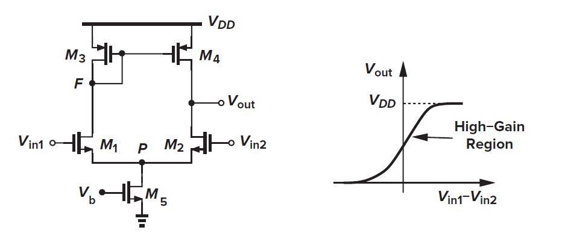
Note that if there is a mismatch in the branch, say threshold voltages of the input pair have a mismatch, then this symmetry argument will not work - and the output common mode can swing wildly between either rails [12].
In a fully differential ckt, even tiny changes during the differential operation, or mismatch in either branches, can cause huge swings in the output common-mode. The fundamental issue is illustrated in figure 35. Tiny changes in drain current can move the drain voltage around by large amounts due to the high impedance seen at this node. A differential feedback network cannot curtail this as this is a common-mode issue. Thus, a common-mode feedback (CMFB) ckt is needed to set the output common-mode to a desired value.
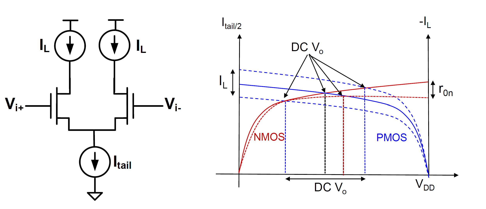
The CMFB ckt should not respond to differential inputs and should be stable. We can use a slower loop since there is no high-frequency common-mode input usually.
The simplest sensing scheme is using a resistor divider (or a capacitor divider) as shown in figure 36. In a differential setting, the outputs of the two branches move in opposite direction and the small signal current moves from one branch to another through these resistors, i.e., the outputs are now loaded by these resistors and can reduce the small signal gain differentially. To a common-mode variation, both the outputs move together, and there is no current through the resistor divider. Even when there is mismatch - there is a common-mode to differential conversion (see figure 6) - but the common-mode aspect is still sensed by the resistor divider. To prevent loading, we might use a capacitor divider at the output but this can affect the bandwidth of the ckt.
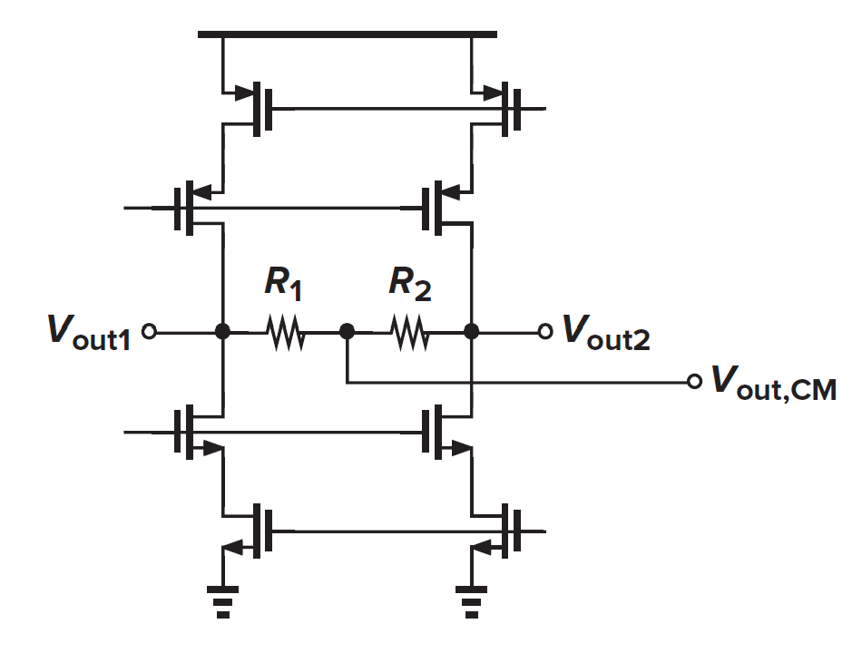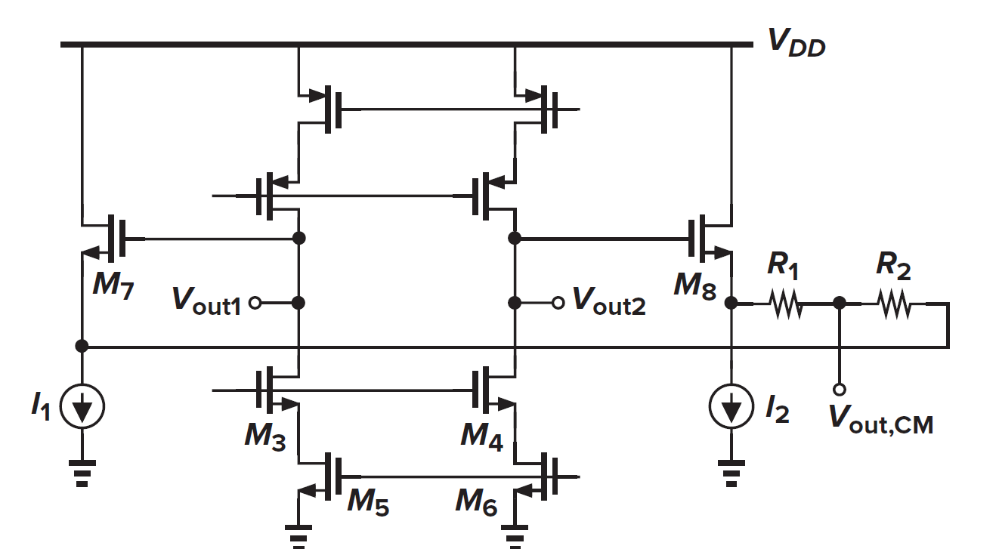
To eliminate resistive loading and bandwidth reduction, we can use source followers to isolate the resistor divider network and the output branches, as shown on the right in figure 36. Note that R1 and R2 or I1 and I2 must still be large enough to make sure that the source followers M7 and M8 are not “starved” when a large differential swing appears [12]. Say \(V_{out2} >> V_{out1}\), the M7 has to sink the current \((V_{out2}-V_{out1} )/(R_1+R_2)\) (assuming M8 follows its input correctly) and its own bias current. Therefore, if \((R_1+R_2)\) or \(I_1\) is not large enough, M7 shuts off (it cannot provide enough \(V_{GS}\) to sustain this large current) and the \(V_{out,CM}\) sensed is incorrect [12].
There is another issue with the source follower sensing, even if we make the sensing resistors or the bias currents for the source followers large enough. The output without CMFB can we as low as \(2V^*\) in figure 36 but with the CMFB ckt, we need it to be at least high enough to support the \(V^*\) of the current source and the \(V_{GS}\) of the source follower. This translates to an additional \(V_{th}\) increase in the minimum the output can swing to. We sacrifice output swing with this sensing mechanism.
We can use a simple op-amp to sense the output common-mode and either change the load or the tail current as shown in figure 37. The op-amp can be a single-ended diff-pair as shown in figure 34. Note the polarity on the op-amp in feedback. As \(V_{out1/2}\) rises, do we need to increase or decrease the bias current? Let us think about this in a simpler ckt - say a resistive loaded common-source. If the output CM voltage is increasing, this happens because of the decrease in bias current through the “pull-up” resistor (load). Therefore, we need to increase the bias current. Hence, the output is connected to the positive terminal and the reference voltage to the negative terminal.
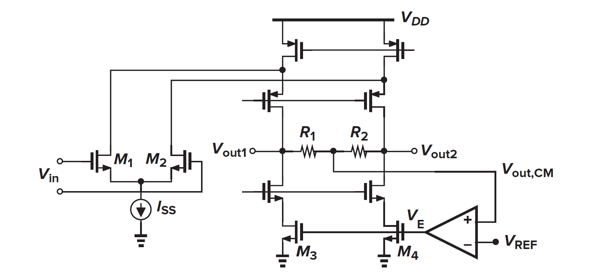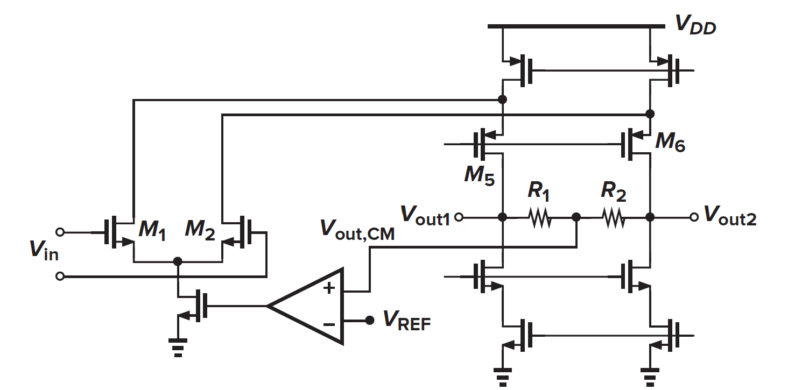
Instead of loading the output with a resistor and then using a single op-amp, we can use a pair of diff-pairs to compare the output voltages directly to a reference voltage as shown in figure 38. Say the signal swing on the inputs M21 and M24 are small enough compared to \(V_{CM}\) that small signal analysis can be applied. From eqn 28, we see that we generate a signal proportional to \((V_{oc}-V_{CM})\) and this is mirrored back to the tail current source in the differential op-amp.
\begin {equation} \label {eqn:cmfb_dda} \begin {split} I_{d22} &= \frac {I_{20}}{2}-g_{m22}\frac {(V_{o2}-V_{CM})}{2} \\ I_{d23} &= \frac {I_{20}}{2}-g_{m23}\frac {(V_{o1}-V_{CM})}{2} \\ I_{d25} &= -I_{d22} - I_{d23} = I_{20} + g_{m22}(V_{oc}-V_{CM})\\ \end {split} \end {equation}
For M21-M24 to not drop into triode for a large range of \(V_{o1}\) and \(V_{o2}\), we require large overdrive voltages for these devices [5]. One drawback here is that we’re sesing both CM and DM signals since we’re directly connecting the outputs to the gates of M21 and M24. Under large differential swing (not just common mode swing), if \(V_{oc} \neq V_{CM}\), and \(V_{od}\) (differential output) is comparable to \(4V_{ov23}\) (overdrive of M23/24), we get that the current through M25 can have a \(V_{od}\) and even a \(V^2_{od}\) term [5]. Therefore, a large differential swing can induce an AC component to the output common mode voltage, even if all the devices in the DDA are matched.
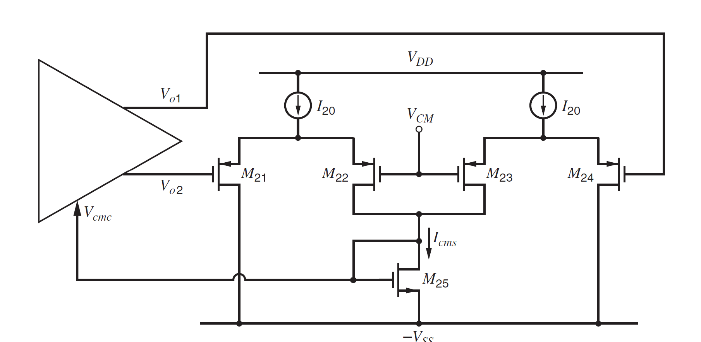
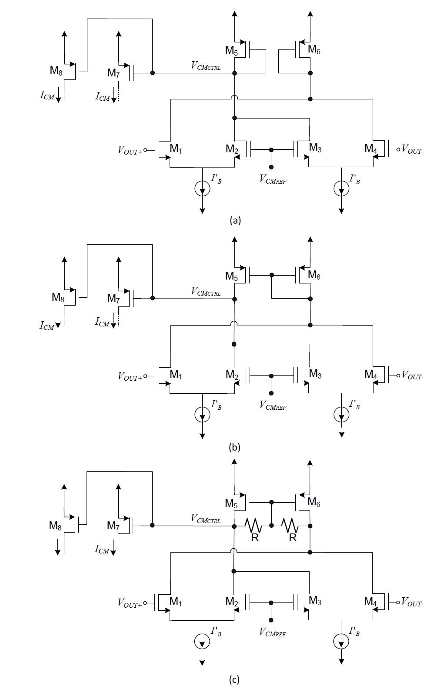
Figure 39 shows a few other common ways to build the DDA for CMFB ckts [4].
Another type of sensing is utilizing xtors in deep triode. As seen in figure 40, the devices M7 and M8 are wide enough to be in triode, then between P and GND, they offer a total resistance \(R_{tot} = R_{on7} || R_{on8}\). Since the devices are in triode we can approximate this total resistance as [12]

\begin {equation} \label {eqn:cmfb_triode} R_{tot} = \frac {1}{\mu _n C_{ox}\frac {W}{L}(V_{out2}+V_{out1}-2V_{th})} \end {equation}
From eqn 29, we see that the sensed voltage (through \(R_{tot}\)) depends only on the output CM and not the differential swings as long as the devices M7 and M8 are in deep triode. This might not hold for larger differential swings where one side can fall out of deep triode (still do not exactly understand this).
We will follow analysis from [13] to study basics of LDOs. The word drop out refers to the fact that we want to keep the unregulated, noisy input close to the output, or a low drop in voltage (\(<\) 100 mV).
Figure 41 shows a generic LDO topology. We define the following metrics for an LDO
For the pass transistor in figure 41, we can either choose a VCCS, or a source follower, or a variable resistor (voltage/current controlled). The last option is generally inferior [13].
In figure 42, we use PMOS as VCCS for the pass transistor. The low dropout is achieved by decreasing the \(V^*\) of the PMOS and making the device wide. Let us add a load \(R_L\) at the output and try to calculate the above parameters.
We can break the loop at X and calculate the loop gain (assuming \(r_o\) of the PMOS is infinite) as
\[A_{LG} = A_1g_m [R_L|| (R_1 + R_2)\frac {R_2}{(R_1 + R_2)}]\]
In open-loop, this acts as a common gate stage with a gain of \(g_m [R_L|| (R_1 + R_2)\frac {R_2}{(R_1 + R_2)}]\). Therfore, the closed loop gain is
\[\frac {V_{out}}{V_{in}} = \frac {g_m[R_L|| (R_1 + R_2)\frac {R_2}{(R_1 + R_2)}]}{(1+A_{LG})} \]
If we design the feedback loop to have high enough loop gain, we can approximate the above expression to
\begin {equation} \label {eqn:pmos_ldo_psrr} A_{CL} = \frac {V_{out}}{V_{in}} \approx \bigg (1+\frac {R_1}{R_2}\bigg ) \frac {1}{A_1} \end {equation}
Eqn 30 suggests that the PSRR can be improved by maximizing the op-amp’s open-loop gain \(A_1\). For load regulation, we can calculate the \(R_{out}\), we note that the PMOS looks like a diode connected device with a gain boosting of \(A_1R_2/(R_1+R_2)\) [13].
\begin {equation} \label {eqn:pmos_ldo_rout} \begin {split} R_{out} &= \frac {1}{g_mA_1\frac {R_2}{(R_1+R_2)}} || (R_1+R_2) \\ R_{out} &\approx \bigg (1+\frac {R_1}{R_2}\bigg ) \frac {1}{g_mA_1} = A_{CL}/g_m \end {split} \end {equation}
Let us look at the noise performance. The noise current from M1 sees a low \(R_out\) as derived in eqn 31. If we model the noise of the op-amp with a voltage soure at its \(V_ref\) node, we see a total output noise of
\begin {equation} \label {eqn:pmos_ldo_noise} \overline {V^2_{n,out}} = \bigg (1+\frac {R_1}{R_2}\bigg )^2 \bigg (\overline {V^2_{nA}} + \frac {\overline {V^2_{nM}}}{A^2_1}\bigg ) \end {equation}
Note that the contribution from resistors R1 and R2 (modelled as \(4kT R_1 || R_2\)) is lumped in with the input noise source at the op-amp’s IRN source [13].

Let us now look at the frequency response of our PMOS LDO. As seen in figure 43,
In addition to providing a large output impedance that can move the dominant pole to a lower frequency, a cascode device can add a parasitc pole. For a single-ended output, we can now have zeros as well. To see this, let’s start with analysis of \(R_{out}\).
In figure 44, we see that at low frequencies, \(R_{out}\) is given by the source degeneration of M2 and M1. However, at high frequencies when \(C_{par}\) is shorted, the boost in output impedance from the source degeneration is missing. But we still have an \(R_{out}\) of \(r_{o2}\) from M2. Therefore, \(R_{out}\) is non-zero at high frequencies. What about \(G_m\)? At low frequencies, \(G_m\) is just \(g_{m1}\) as all of the small signal current is shunted by the output. From figure 45 (thanks to Joosung), we see that the pole from the \(G_m\) calculations ends up being at a much larger frequency than the pole from \(R_{out}\). Therefore, we do have a non-zero gain at the pole of \(R_{out}\) and in fact, it the product \(G_m R_{out}\) is constant till it hits any other parasitc poles or the \(G_m\) pole. This implies at least one zero from this parasitic capacitor. This is true for both single-ended and differential cascode amplifiers. This is covered in more detail in [2]. When the pole at the load cap is taken into account, we could potentially form a pole-zero doublet (or zero-pole too) as shown in figure 45.
The above analysis can be extended to a gain-boosted cascode as shown in figure 46.
Since we’re discussing about parasitc capacitors and their impact on high-frequency response, let’s take a brief detour to explore a single-ended diff pair more closely. In figure 47, we see that \(R_{out}\) doesn’t change appreciably at high frequencies. However, the parasitc cap at the diode connected M3 is large enough that it can short at high frequencies. We lose \(g_m/2\) from \(G_m\) because the small signal current from M1 is shunted to GND by this parastic capacitor. However, it stays constant till we encounter another parasitc pole. Once again, this means that the product \(G_mR_{out}\) is flat for a while - indicating a presence of a zero. In fact, from figure 47, we see that there is a pole-zero doublet from the current mirror. This is true even in a cascode single-ended amplifier.
So far we’ve dealt with inputs that are small enough that they can be predicted by the small-signal response with decent accuracy. What if we apply a large signal, such as a step function, at the input of an op-amp?
In figure 48, the expected step response is a decaying exponential but the actual response we get is a ramp. The slope of this ramp is called the slew rate of the amplifier [5].
We already know at \(V_{id} \geq \sqrt {2}V^*\), one branch of the diff-pair shuts down and all of the current flows through a single branch. In a 2-stage op-amp with a compensation capacitor \(C_c\), this means that the devices M2, M3, and M4 are turned off and \(C_c\) is discharged through M1 and \(I_{SS}\) as shown in figure 49. During this, transistor M5 has to sustain a current of \(I_{SS}+I_1\). If M5 is not wide enough, this current will be sustained by dropping the voltage at node X (scaling makes this problem worse) and pushes M1 into triode.
Therefore, the positve slew is limited by \(I_{SS}/C_c\). Similarly, for a negative input, M1 is off, M2 steals the bias current completely and it reaches output through the current mirror M4 and M3. M3 now charges the \(C_c\) with \(I_{ss}\). The negative slew rate from the first stage is \(-I_{SS}/C_c\).
If we now had a second capacitor at the load, the output stage would have to charge/discharge that load cap.

If the input to the first stage is large and positive, the input to M6 in figure 50 is low and can turn off M6. \(C_L\) is now charged by \(I_{bias,2}\). On the other hand, during discharge of \(C_L\), M6 can support large enough current before turning the first stage’s devices into triode as explained previously. The positive slew rate has an arbitrarily large (depends on sizing of M6) value while the negative slew rate is limited to \(I_{bias,2}/C_L\).
What about slew rate in cascode devices? For a single stage cascode, the same analysis is applied as was to the diff pair.
When there is a large positive swing on M1 in figure 51, M2 turns off and there is no current through M2 and M2A. \(I_{tail}\) is sunk by the left branch and is mirrored to the right branch using the current mirrot M3-M4. This sets the positive skew rate of \(I_{tail}/C_L\) for the cascode amplifier, similar to the diff pair. Similarly, when there is a large negative swing, M1 and the left branch are turned off, and so is M4 and M4A. M2 and M2A sink in the tail current and discharge \(C_L\), giving us a negative slew rate of \(-I_{tail}/C_L\).
Let us first look at a class AB output stage. In figure 52, the charging and discharging of the load cap is not set by any bias current - instead set by the max swing the output transistors can take without pushing the first stage’s current sources into triode (this is true only if there is a compensation capacitor). Therefore, there’s an arbitrarily high value of positive and negative slew rate for a class-AB output stage.
Let us now analyze a class AB differential amplifier with a class AB input stage. Figure 53 shows an amplifier with a class AB input stage. M1 and M5 (M4 and M8) form a unity-gain source follower to feed the input of M6 and M7. M3 and M7 deliver current to the cascode current mirrots M9, M10, and M11, M12, which are mirrored into the cascode output stage.
From a small signal perspective, \(R_{out} = (g_{m15}r_{o15}r_{o16} || g_{m14}r_{o14}r_{o13})\). For \(G_m\), grounding the output node, we see that, currents \(i_{d3}\) and \(i_{d7}\) are mirrors to the output, yielding \(i_{sc} = i_{d3} + i_{d7}\). If M2 and M3 are sized equal, and so are M6 and M7, we get that \[i_{d3} = \frac {g_{m3}v_i}{1+\frac {g_m3}{g_{m6}}}\] \[i_{d7} = \frac {g_{m2}v_i}{1+\frac {g_m2}{g_{m7}}}\]
Therefore, \(G_m\) is given by,
\[G_m = \frac {2g_{m3}}{1+\frac {g_m3}{g_{m6}}}\]
If we make all the 4 input transistors (M2,M3, and M6, M7) equal, then \(G_m = g_{m3}\) [5].
Let us now see what happens to the slew rate in this case. If a large input swing is applied, say M2 and M7 are cut off, M3 and M6 will have a large overdrive voltage on them, therefore, sinking a large current. These currents are mirrored to the output (assuming everything is sized to accommodate such large currents without throwing neighbours into triode), the slew rate can be arbitrarily high.
We use current mirrors to copy the reference current and bias our ckts. A standard current mirror might lead to mismatched copying due to channel length modulation, particularly in shorter channel length devices. We need to somehow make the \(V_{DS}\) drops across the both devices same. A cascode device increases the output impedance when looking into the drain node. This essentially means that large changes in voltage are minimized to minimum changes in currents - thereby leading to a stable current source.
In figure 54, we see M3 acting as the cascode device and being biased by M0. One drawback is that we’ve reduced our output swing by an extra \(V_{th}\) (\(2V^* + 2V_{th}\) drop in figure 54). This comes from the M0 device biasing M3. We want to keep M3 but figure out how to equalized \(V_{DS1}\) to \(V_{DS2}\) without M0 and also find a way to bias M3.
In figure 55, we see a way to get around the above output swing issue. However, we still need to find a way to bias \(V_b = V_{th}+2\Delta V\). On the right, we see a stack of 4 \(W/L\) transistors, or simply one \(W/4L\) transistor, generating \(V_b\).
There is still an issue with headroom in figure 55. We might not be able to afford \(2V^*\) at the tail of a diff pair. Moreover, we need to track the input common mode changes at the tail node.
In figure 56, we make the node P have the same drop as the input pair, by replicating it on the bias generating side. This is called a replica bias. \(V_P\) now tracks \(V_{DS1}\) to ensure proper current matching. We don’t even need two devices at the bias side - a single device to replicate the input is enough [8]. The general idea is to match the device \(V_{DS}\) drops by mimicing what is at the top and bottom of the device that is copying the current. One observation in such ckts where there is no diode connection is that we’re using some kind of feedback mechanism to generate the required \(V_{GS}\) from the reference current. Let us come back to this in a bit.
One issue with replica biasing is that if input common mode level rises too high, the replica bias transistor can fall into triode. One way to avoid this is prevent the direct connection between the drain of the replica devices and the gate of the biasing device, and instead pass it through a source follower [8]. This way, the replica device acts as current buffer (common gate stage) and raises its drain voltage to ensure the current on its drain and source nodes are matched. We basically need any ckt that can mimic the diode connection - as the drain voltage goes up, so should the gate voltage. Without this feedback, we can’t generate voltage from current in a transistor [8].
In figure 57, we see two ways to do this. A source follower can be added to provide the non-inverting gain or a single ended diff pair. How do we generate \(V_{ref}\) in the case of the diff pair? We want it to be equal to the \(V_{DS}\) drop of the tail source. Figure 58 shows a way to generate the \(V_{ref}\).
Note that the \(V_{ref}\) we generated here can actually be used to set the common mode of the output of the 5T OTA if the resistors were all replaced with current sources. In figure 59, while the loop in red sets accurate tail current, the loop in green (ignore the load resistors - not needed for analog ckts, only high speed ckts) sets the replica bias for the load, and hence, sets the output common mode [9].
If we want to current mirrors that copy the reference current with little static error, one such architecture is shown in figure 60.
\(I_{ref}\) flows through a cascoded current mirror pair and the feedback from M2-M3-M4 to source of M1 makes sure the \(V_{DS}\) of M3 and M2 match. It it this negative feedback that makes the current matching even more accurate. If the gate/drain of M1 increases, this increases the voltage on gate of M3. But that branch cannot sustain more current than \(I_{ref}\) - that means \(V_{DS}\) has to go down for M3 to keep the current same. This drop means that the source of M4 drops, which leads to a drop in gate of M4, which in turn leads to a drop in gate of M2 - thereby equalizing the \(V_{DS}\) across M1 and M3. Alternatively, M3 can be viewed as a common-source amplifier and hence, an increase in gate current drops the drain voltage [7].
For the output impedance of the Wilson Current Mirror, we can view M2 as being degenrated by some \(R_s\) and being gain-boosted by the negative feedback.
From figure 61, we see that the loop gain depends on M3 and the overall \(R_{out}\) depends on the \(g_{ds}\) of M2 and M3. The output impedance is similar to that of a regular cascode current mirror. At the reference branch, the minimum voltage is \(2V_{t} + 2 V^*\), and the output branch the minimum voltage is \(V_t + 2V^*\) - for all devices to be in saturation. This is the same as a regular cascode.
Widlar current sources are used to create low-currents for biasing and also provide a supply independent current - all without large resistors that are noisy and occupy huge area. Note that - it is more a current source than a current mirror since its output current does not depend a lot on the input current and the supply voltage.
While the closed form expression might be too cumbersome to make any meaning out of, we can see that due to the source degeneration, we have an increased output resistance. Another aspect is the negative feedback from the source degeneration that lets \(I_{out}\) be well defined.
\begin {equation} \label {eqn:widlar_fb} \begin {split} V_{GS1} - V_{GS2} - I_{out}R_2 &= 0 \\ I_{out} &= k_2(V_{GS2}-V_{th})^2 \\ \frac {V_{DD}-V_{GS1}}{R_1} &= I_{in} \\ I_{in} &= k_1(V_{GS1}-V_{th})^2 \end {split} \end {equation}
From system of eqns in eqn 33, we see that the \(I_{out}\) strongly depends on M2 and R2, but does have some dependence on overdrive voltage of M1 as well (which sets the input current). Wildar current sources are used in ckts where we need bias curents of a few microamps [5].
To reach even lower values of bias currents - in the order of nanoamps, we use a ckt shown in figure 63.
From KVL, we can write \[V_{GS1}-I_{in}R-V_{GS2}=0\]
since the sources of the transistors are tied together, and assuming the threshold voltages are the same, we can write
\begin {equation} \label {eqn:peaking_cs} \begin {split} V_{ov2} &= V_{ov1} - I_{in}R \\ I_{out} &= k_2(V_{ov2}-I_{in}R)^2 \end {split} \end {equation}
In eqn 34, we assumed that both M1 and M2 are in strong inversion. But if the input current is very small, M1 and M2 are in weak inversion where the transistors have an exponential dependence on \(V_{GS}\) [5]. In this region, we can rewrite the above eqns as
\[I_{out} \approx I_{in} \exp \bigg (-\frac {I_{in}R}{nV_T}\bigg )\]
As seen on the plot on the right in figure 63, when the input current is small, \(I_{out} \approx I_{in}\). We see a peaking behavior as the current increases because the drop across the resistor is slower than the increase in \(V_{GS1}\) [5]. The peak value depends on the value of the resistor.
We can generate two kinds of bias voltages - absolutely proportional to temperature (PTAT) or inversely proportional to temperature (CTAT) - and we can combine them to form a temperature independent bias. Figure 62 shows a Widlar current source that can achieve both these objectives.
Take voltage across a diode as a function of current through it [11] -
\begin {equation} \label {eqn:diode_ctat} \begin {split} V_D &= V_T \ln \bigg (\frac {I_0}{I_S}\bigg ) \\ I_S &= bT^{4+m}\exp \bigg (\frac {-E_g}{kT}\bigg ) \end {split} \end {equation}
where \(I_S\) is the reverse saturation current through the diode. On first glance, eqn 35 looks PTAT. However, turns out \(I_S\) is strongly CTAT and we get eqn 36 which proves that the drop across a diode is indeed CTAT.
\begin {equation} \label {eqn:diode_ctat2} \begin {split} \frac {\partial V_D}{\partial T} &= \frac {1}{T} (V_D-(4+m)V_T-\frac {E_g}{q}) < 0 \end {split} \end {equation}
The same expressions (with slightly different values) are true for a BJT as well (basically any pn junction). The base-emitter voltage (similar to \(V_{GS}\)) is also CTAT.
Thermal voltage \(V_T\) is PTAT. How do we obtain this?
If we force the same current \(I_0\) through the two branches, where each diode is of the same size, we see that
\begin {equation} \label {eqn:ptat_basic} \begin {split} I_0 &= nI_S \exp \bigg (\frac {V_{D1}}{V_T}\bigg ) \\ V_D &= V_T \ln \frac {I_0}{I_S} \\ V_{D1} &= V_T \ln \frac {I_0}{nI_S} \\ V_D-V_{D1} &= V_T \ln n \propto T \\ \end {split} \end {equation}
From eqn 37, we see that the difference in the two voltages is PTAT. We can modify the ckt slightly to a make the voltage drop across a resistor PTAT as shown in figure 65. Here we insist that two things - the currents through both branches should be the same, and the voltages at \(V_D\) and \(V_2\) are the same. In this particular example we’re using a supply independent current source to achieve these two criteria, but we could use a current source and an op-amp or any other ckt to achieve the same.
In figure 65, we can write that the voltage across the resistors is PTAT and is given by the same eqn as in eqn 37. We can also write
\[V_D-V_{D1} = I_0R_1=V_T \ln n\]
this means that if we can copy the current \(I_0\) onto another branch, we can make another PTAT source (\(I_0\) is a PTAT current source and voltage drop across R2 is a PTAT voltage source).
\[V_{R2} = I_0R_2 = V_T \ln n \bigg (\frac {R_2}{R_1}\bigg )\]
To summarize,
Let us look at how we implemented the cross-coupled current mirror in figures 65 and 66. We want a current that is independent of \(V_{DD}\). In figure 67, we can set \(I_{OUT} = K I_{REF}\) with any arbitrarily set \(I_{REF}\). To add an extra, constraint to the system, we add a resistor at the source of M2 to define a current level.
In figure 68, if we ignore channel length modulation and body effect, we can write the output current as
\begin {equation} \label {eqn:const_gm_current} I_{OUT} = \frac {2}{\mu C_{ox}(W/L)} \frac {1}{R^2_S} \bigg (1 - \frac {1}{\sqrt {K}}\bigg )^2 \end {equation}
In [12], example 12.1 solves for the output current sensitivity as a function of \(V_{DD}\) when there is channel length modulation is not negligible. The surprising result is that, the sensitivity \(I_{OUT}/V_{DD}\) can be reduced if M4 has high output impedance (among other factors). Therefore, for these ckts, we generally use long channel devices to make the dependence on supply voltage minimal and to reduce flicker noise.
In figure 68, does it matter how the loop is closed? Can we have M2 as a diode connected device and switch the loop direction? Turns out, no. As seen in figure 69, only when M2 has a degeneration resistance does the loop gain remain below 1 despite positive feedback. In the opposite case, the feedback is still positive but the loop gain is greater than 1.
We can use \(I_{OUT}\) from figure 67 to bias transistors to have a constant-\(g_m\) across PVT. If \(R_S\) has a known temperature flavor (CTAT or PTAT), we can use previously seen techniques to create a temperature-independent current source. For devices that match the size of M2, we get a fixed \(g_m\) across PVT
\[g_m = \frac {2}{R_S}\bigg (1 - \frac {1}{\sqrt {K}}\bigg )\]
This ckt is also known as constant-\(g_m\) biasing. An improved constant-\(g_m\) biasing ckt is shwon in figure 70.
Adding a PTAT and a CTAT voltage with the appropriate coefficients gives us a temperature-independent voltage source (or current source if we pick a suitable resistor).
As long as the current mirror (or equivalently an op-amp) maintains the \(V_D = V_2\), the dependence on supply voltage depends on the PSRR of the constant-\(g_m\) or the op-amp ckt. The current in the outermost branch is PTAT - when deriving the \(V_{BE}\) drop across a diode, we assumed a constant current source as seen in eqn 35. Will the voltage drop still be CTAT if the current \(I_0\) through the diode is PTAT? Turns out, yes - though a PTAT current is passed through a diode, voltage across it is still a CTAT with slightly lower slope when compared to diode biased using constant current [11].
In the case of the op-amp in figure 71, \(V_D=V_2\) is the CTAT voltage and the voltage drop across R1 is the PTAT voltage. If we want to create lower voltages, we need to somehow diving the PTAT and CTAT voltages by some constant (temperature independent). This is achieved by the ckt in figure 72.
The CTAT and PTAT voltages are divided by the resistors places in the parallel branches, which yields a lower reference voltage.
Since self biased circuits have two operating points namely zero current and normal operating point, it must have a startup circuit [11].
In figure 73 on the left, M6 is a small W/large L device which acts as a large resistor. It pulls the gate of M9 high, turning it on. M9 tries to pull the gates of M3 and M4 low, which starts up a current in them and this sets the current flowing through all branches. M5 is also now on (since its gate is tied to M3’s/M4’s) and turns on M7 which pulls M9 low (large IR drop across M6) and shuts the startup ckt.
In the same figure on the right is a much simpler startup ckt. M5 is off initially, meaning the voltage at its drain is \(V_{DD}\). Similarly, M1 is off and its drain is GNDed. M5 turns on and conducts current since it sees a potential on its gate and a huge \(V_{DS}\). As the voltage on the gates of the current mirror devices increase, the diode-connected device eventually goes into cut-off and is removed from the ckt.
There are different classes of oscillators but we only discuss RC/LC oscillators here.
In figure 74, we see that the on and off times for a Schmitt trigger-based oscillator depends on the ratio of the high and low switching thresholds and the external RC network. The output is a square wave with rise and fall times dictated by the delays through the Schmitt trigger’s internal circuitry. The oscillation frequency is given by \(f=1/(t_1+t_2)\).
In figure 75, we see a voltage-controlled oscillator (VCO) built out a current-starved inverter and a Schmitt-trigger. The current mirrors M5 and M6 set the bias current in the inverter branch. When the input is 0, M3 and M4 charge the capacitor C, whose voltage rises linearly. The Schmitt trigger is pulled high at \(V_{SPH}\) and the final inverter sets positive feedback to turn off the PMOS devices and discharge the capacitor through the NMOS devices. The control voltage can change the bias currents, thereby, controlling the oscillation frequency.

We follow some examples from this blog [3].
A cascade of 3 RC stages can provide a phase shift of 180\(^\circ \) - where each stage is tuned to give a 60\(\circ \) shift by selecting the appropriate value for the passive components.
\[\phi = \arctan \bigg (\frac {1}{sCR}\bigg )\]
An active component that can provide a gain of at least 1 at the required frequency while providing another 180\(\circ \) is used to create the positive feedback loop. One such implementation is shown in figure 76 with an op-amp. The oscillation frequency is given by \(f=1/2\pi RC \sqrt {2N}\).
Another topology of an RC phase shift network is implementing a high-pass filter followed by a low-pass filter to pick a particular frequency and to be able to tune the \(Q\) of the oscillator. In figure 77, a series RC and a parallel-RC network act as a phase shift network and the resistances R1 and R2 set the closed loop gain (non-inverting). The oscillation frequency is given by \(f=1/2\pi RC\).
Another way to implement this filter is using a notch filter - low-pass in combination with a high-pass filter. This replaces the filter in the previous example, giving us the ckt in figure 78. This ckt is sometimes called the twin-T oscillator and it has the same oscillation frequency as the Wien bridge oscillator.
An ideal LC tank, which is made of an inductor and a capacitor in parallel, has an impedance across its terminals given by \[Z(s) = \frac {sL}{1+s^2LC}\]
At \(\omega = 1/\sqrt {LC}\), \(|Z(s)|\) blows up and when a zoltage is applied across the tank, the ckt draws no current from the source. In practice, there is always a series resistance to the inductance and the impedance eqn changes to
\[Z(s) = \frac {R_s+sL}{1+sCR_{s}+s^2LC}\] \[|Z(s)| = \frac {R^2_s+\omega ^2 L^2}{(1-LC\omega ^2)+R^2_sC^2}\]
The impedance across the terminals doesn’t blow up to infinity but is still maximized at the same frequency as before. We define the quality factor of the inductor as
\[Q = \frac {\omega L}{R}\]
We can use \(Q\) to model the series resistance as a parallel resistor and inductor combination as shown in figure 79.
\begin {equation} \label {eqn:inductance_z} \begin {split} L_p &= L (1+\frac {1}{Q^2} \approx L \hspace {2mm }(Q >> 1)) \\ R_p &\approx Q^2R_s \end {split} \end {equation}
As seen in figure 80, the phase starts at +90\(^\circ \) at DC, becomes zero at the resonant frequency, and then becomes -90\(^\circ \).
A tuned gain stage is shown in figure 81. It is a common source stage with an RLC tank as the input. At \(\omega = 1/\sqrt {LC}\), the ckt has a gain of \(-g_mR_p\) and the gain is close to zero at high and low frequencies. Two such stages can act as an oscillator if the loop gain is greater than 1.
In fact, this two-stage tuned gain oscillator can be made fully differential and redrawn as a cross-coupled oscillator as shown in figure 82.
We can realize an LC oscillator even with a single stage. Let us first consider the following points - the single stage ckt in figure 81 has a phase shift of 180\(^\circ \) rather than 360\(^\circ \), second, a common-gate stage introduces zero phase shift. We can use the following points to build a ckt which could oscillate if the output is returned to the source instead of the gate! Figure 83 shows such a ckt. The only issue is that the closed loop gain is never infinity (at any frequency), the ckt fails to oscillate. Another issue is that the source degeneration in figure 83 is infinite - meaning no voltage gain from input to output.
We solve these issues by making the changes shown in the ckt as shown in figure 84. Without the parallel capacitance in the LC tank, the oscillation frequency is given by
\begin {equation} \label {eqn:colpitts1} \omega ^2_R = \frac {1}{L\frac {C_1C_2}{C_1+C_2}} \end {equation}
If there is a parallel capacitor in the LC tank, \(C_p\), then the eqn 40 changes slightly with \(C_p\) in parallel to the series combination of C1 and C2.
Before we see how do we get negative resistance, let’s see why it could be helpful to have such a tool. In the LC tank in figure 79, we see that having a series resistance (or equivalently a parallel resistance) prevents the impedance from blowing up. Ideally, we would like to have infinite \(Q\) and this can happen only when resistance vanishes. If we had a negative resistance in parallel to the equivalent parallel resistance, we can achieve this!
How do we get a negative impedance? In feedback, the loopgain is positive for a negative feedback scenario. However, for a system in positive feedback, the loop gain is negative and if this is sufficiently negative, the impedance can be negative [12]. How do we get positive feeback? By making sure there are no signal inversions but still making a 180\(\circ \) phase shift around the loop.
In figure 85, a source follower is used (M1) in positive feedback with a common gate stage (M2). Both of these stages do not produce a sign inversion in gain. Negative resistance comes from the fact that if input at gate of M1 increases, so does the voltage at source, which decreases the drain of M2 (since \(V_{GS}\) decreases). In fact, the input impedance of this ckt is \(-2/g_m\). We can build an oscillator as shown on the right in figure 85 to cancel out the parallel resistance in the LC tank.

A fully differential version is shown in figure 85. We get a differential output at X and Y nodes that can used to alternatively turn on and off two different outputs (like LEDs).
In a fully differential diff pair, the tail current’s noise splits into the two branches equally and doesn’t show up in the differential output. The input pair and the current source - each one of them - contributes to the output differential noise.
Similarly, the bias noise shows up in common-mode (mirrored from bias branch to both branches of the diff pair) and does not show up in a fully differential output. However, if the output is single ended, this noise shows up and is multiplied by the current mirror ratio. In this case, we can add an RC-filter to the bias node and set the low-pass corner as per spec.
From figure 86, we can rewrite the total output noise in the diff pair as
\begin {equation} \label {eqn:5t_ota_noise_eqn} \begin {split} \overline {i^2_{n_out}} &= 8k_bT (\gamma _p g_{mp} + \gamma _n g_{mn}) \\ \overline {i^2_{n_out}} &= 8k_bT\gamma _n g_{mn} \bigg ( 1+ \frac {\gamma _p V^*_n}{\gamma _n V^*_p} \bigg ) \end {split} \end {equation}
From eqn 41, we see that for a given input pair size, we need to increase the \(V^*_p\) of the current source to decrease the output noise - leading to a tradeoff between output swing and noise.
In a cascode ckt, the cascode device does not contribute to noise when sized properly. This is summarized in figure 88. The noise circulates within the cascode device when parasitcs at the source of M2 are not big enough to shunt any small signal current to GND.
Do we need to split the ckt into common-mode and differential ckts and then analyze both individually? Not quite, this is because the tail node is no longer at virtual GND when analysing impact of noise from one input device (the other input device is considered noiseless then), there is an inherent asymmetry in the ckt now and the half ckt concepts might not work always.
How do common-mode feedback ckts impact noise?
Flicker noise corner frequency is where the thermal noise from the channel equals the flicker noise in the channel.
\begin {equation} \label {eqn:flicker_noise} \begin {split} \frac {K_f I_D}{L^2C_{ox}}\frac {\Delta f}{f_{co}} & = 4k_BT\gamma g_m \Delta f \implies f_{co} = \frac {K_f}{8k_BT\gamma C_{ox}} \frac {V^*}{L^2}\\ \frac {K_f g^2_m}{WLC_{ox}}\frac {\Delta f}{f_{co}} & = 4k_BT\gamma g_m \Delta f \implies f_{co} = \frac {K_f}{4k_BT\gamma C_{ox}} \frac {1}{L} \frac {g_m}{I_D} \frac {I_D}{W} \end {split} \end {equation}
From the two eqns in figure 42, we see that we can optimize the corner frequency in different ways. Increasing channel length improved flicker noise in any case. For a given \(V^*\), \(f_{co}\) goes down by \(1/L^2\). On the other hand, lower \(g_m/I_D\) (or higher \(V^*\)) can improve flicker noise corner for a given \(I_D\) (the discrepancy in the two eqns is from the fact that different parameters are being held constant). Flicker noise increases with increased current density (\(I_D/W\)). Overall, larger devices and higher \(V^*\) help flicker noise at the cost of decrease power efficiency and increased area. Depending on the proces, PMOS devices can show lower 1/f noise compared to NMOS ones due to the buried channel.
Photodetectors convert optical power to current [10]. A Transimpedance Amplifier (TIA) converts this current into a voltage that can be later digitized. A simple passive resistor can do the job as shown in figure 89. A higher resistance gives a higher conversion gain and reduces noise current (which is 4kT/R, voltage noise PSD is 4kTR) [6]. However, the accuracy of the current sensed is impacted by the output impedance of the sensor. Increasing resistance also decreases the bandwidth as shown in figure 89. This motivates a different topology.
Let’s consider the an ideal op-amp with a resistor in feedback . This is called an R-TIA. The input impedance (with an ideal op-amp) is zero due to the virtual GND at the amplifier’s input and all the current flows through the feedback resistor. Therefore, ideally,
\[\frac {V_{out}}{i_{in}} = R_F \]

Let’s relax the ideal op-amp assumption to gain more insights into the behavior of the R-TIA.
Computer&Electronics. CMOS Schmitt trigger and its application. https://www.youtube.com/watch?v=0WSm7NBRnao. YouTube video, published February 15, 2024. Accessed: August 22, 2025. Feb. 2024.
IIT Madras - BS in Electronic Systems. Lecture 12(1): Poles & zeros in a cascode and telescopic cascode OTA. https://www.youtube.com/watch?v=j_QmOO_C0Ns. YouTube video, published April 8, 2024. Accessed: August 19, 2025. Apr. 2024.
Electronics Tutorials. RC Oscillator Circuit - The RC Oscillator Tutorial. Accessed: August 23, 2025. 2024. url: https://www.electronics-tutorials.ws/oscillator/rc_oscillator.html.
M. Pilar Garde, Antonio Lopez-Martin, and Jaime Ramirez-Angulo. “Improved Common-Mode Feedback based on LCMFB Techniques”. In: 2017 13th International Conference on PRIME. IEEE. Taormina, Italy, 2017, pp. 97–100. doi: 10.1109/prime.2017.7974161.
Paul R. Gray et al. Analysis and Design of Analog Integrated Circuits. 5th. John Wiley & Sons, 2009. isbn: 978-0470245996.
“ISSCC Magazine, Summer 2025, Volume 17, Number 3”. In: IEEE Solid-State Circuits Magazine 17.3 (Summer 2025). ISSCC Magazine, Volume 17, Number 3.
Tejas Ketkar. Output Impedance of Wilson Current Mirror. https://www.youtube.com/watch?v=bAzbIq8D8Bc. YouTube video, published June 23, 2024. Accessed: August 25, 2025. June 2024.
Nagendra Krishnapura. lecture23 - Replica biasing, optimizing transmitter swing - 1. https://www.youtube.com/watch?v=6W80WVgB5WM. YouTube video, VLSI Broadband Communication Circuits. Accessed: August 24, 2025. Feb. 2024.
Nagendra Krishnapura. lecture24 - Replica biasing, optimizing transmitter swing. https://www.youtube.com/watch?v=52y54rFNiho. YouTube video, VLSI Broadband Communication Circuits. Accessed: August 24, 2025. Mar. 2012.
Salvatore Palermo. Lecture 13: Transimpedance Amplifiers (TIAs). Tech. rep. Available at https://people.engr.tamu.edu/spalermo/ecen620/lecture13_ee620_tias.pdf. Texas A&M University, Analog & Mixed-Signal Center, Fall 2024.
Guru Prasad. Band-Gap Reference. Tech. rep. Accessed: August 24, 2025. Manipal Academy of Higher Education, 2018. url: https://www.researchgate.net/profile/Guru-Prasad-4/publication/328364212_Band-Gap_Reference/links/5bc88c97299bf17a1c5c8e7c/Band-Gap-Reference.pdf.
Behzad Razavi. Design of Analog CMOS Integrated Circuits. 2nd. Available at https://picture.iczhiku.com/resource/eetop/whIFtRPGfZzldcNC.pdf. New York, NY: McGraw-Hill Education, 2017.
Behzad Razavi. “The Design of An LDO Regulator [The Analog Mind]”. In: IEEE Solid-State Circuits Magazine 14.2 (2022), pp. 7–17. doi: 10.1109/MSSC.2022.3167308.